TRS Website Efficiency Audit — Live Progress Tracker
How to read this + Owner Assignments & Sign-Off
This is the same audit doc from the automated run, now updated with everything Kate has tested live since — Step 1 (PageSpeed/Lighthouse/WebPageTest) is done, Step 2 (Search Console) hit a blocker, and a new critical finding surfaced (booking chat widget). Statuses below reflect where things actually stand right now, not just the original automated pass.
- Owner A (Tech lead / dev — website maintenance): LID
- GHL pipelines maintenance: LID
- Google Business Profile maintenance: LID
- Client review replies (carve-out — stays separate from GBP maintenance above): Kate
- Owner B (Marketing / content): TBD — not yet assigned
- Deadline: 5 working days from the 15 July 2026 handover per the checklist — approx. 22 July 2026. Flag to Tara/Owner A to confirm, since several Top Fixes (schema, booking widget, indexing) are unlikely to close by then.
- Report back to: Tara — to be confirmed
🚨 Critical — needs attention today
- Booking chat widget fails to submit. 100% of visitors hitting the primary "Book Now" CTA on desktop hit a dead end (red "Failed" / "Try Again!!"). See 4.6 Booking Channel Test and Top Fix #2.
- "Janabiyah Quiz Hijack" — a giveaway/quiz popup takes over /en/bh/locations/janabiyah/ on load, blocking location/booking access in 11 of ~15 sampled sessions. See 3.5 Mobile Session Review.
Still To Do
Genuinely not-started items — not failures, just not reached yet.
- 4.2 — GA4 funnel map⏳ Pending Start
- 4.3 — GHL cross-check⏳ Pending Start
- 4.4 — Phorest cross-check⏳ Pending Start
- Open Questions for Tara / Owners →3 open
🚨 New Findings Since Original Audit (added 16 July 2026)
#1Booking chat widget fails to submit — CRITICAL▾
The "Book Now" button opens a chat widget (not a Phorest deep link — already known from Top Fix #2). New finding: the widget itself is broken. Submitting the contact form returns a red "Failed" status with a "Try Again!!" prompt. Confirmed on two separate Google accounts, so it's not an account-specific issue — it's failing for every visitor right now.
Why it matters: this isn't just an extra step anymore — it's a dead end. Right now, 100% of visitors trying to book through the primary CTA hit a wall with no fallback path.
Owner: A (dev) — Est: urgent, same-day if possible. See 4.6.
#2Google Search Console — RESOLVED (was a wrong-account issue, not missing setup)▾
Initial attempts under two different Google/GoDaddy accounts ("TK" personal, then a mixed search) surfaced Google's "Welcome" screen, suggesting no verified property existed. Investigation traced this to simply being logged into the wrong accounts — GoDaddy DNS actually held four separate google-site-verification TXT records (unclear which service each maps to), and Yoast SEO on the live WordPress site already had a working Google verification code in its Site Connections field. David (dev contact) granted Kate access to the actual long-standing Search Console property under kate@tararosesalon.com — it has been live and collecting data since mid-April 2026 (3,614 total web search clicks recorded).
Result: 1.3 is NOT blocked — it was simply inaccessible due to account confusion. Real data now pulled below.
Action for handover docs: note kate@tararosesalon.com as the account with GSC access, and log David as the technical contact who can grant/adjust access to Analytics and Search Console going forward.
▸📎 View DNS verification evidence
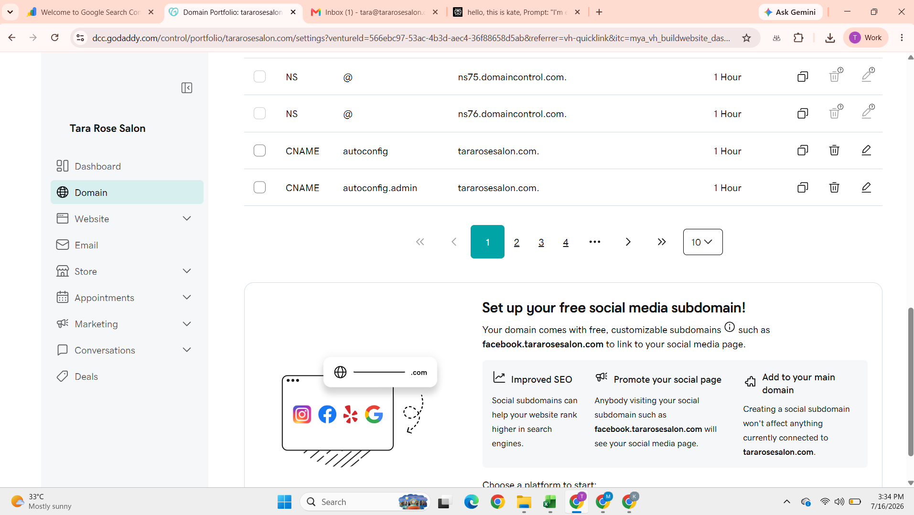
#3GBP Freshness + Confidence Promise cross-channel consistency — findings from direct GBP backend review▾
5.1 — Posts stale, batch-scheduled, not weekly
- All 4 UAE locations (Al Quoz, Khalifa City A, Motor City, Saadiyat) show their most recent post dated June 19, 2026 — identical across all four, confirming a one-time batch post rather than ongoing weekly management. 27 days stale as of 7/16.
- Categories, hours, and addresses all otherwise current and accurate across all 4 UAE listings.
- Al Quoz is missing the LinkedIn profile link present on Khalifa City, Motor City, and Saadiyat, and carries an extra "Hair removal service" category none of the others have.
- Motor City's GBP "Menu or services link" field points to tararosesalon.com/services/ (missing the /en/ae/ prefix). Confirmed via direct site check: the live website's own navigation correctly uses /en/ae/services/ — so this is a GBP data-entry error only, not a broken link on the site itself.
Bahrain — most serious location, several compounding issues
- GBP backend confirms hours ARE entered correctly (Mon–Wed 10am–9pm, Thu 9am–6pm, Fri closed, Sat 9am–6pm, Sun closed) — yet the public-facing listing shows zero hours ("Add missing information"). This is a publish/sync failure, not missing data on Kate's end.
- Public listing also shows "Posting is currently turned off" — combined with the hours not displaying, this suggests the profile may be under a Google restriction or unverified state, not simply inactive.
- Description still reads "opening soon... this January" while the Opening Date field is set to August 1, 2026 — six months out from today (7/16/26). Outdated copy, not a system error.
- The saved Website field has a live Facebook click-tracking ID (fbclid=...) and utm_source=ig permanently baked into the URL — should be replaced with a clean canonical link.
- "Janabiyah" vs "Hamala" is NOT a contradiction — Janabiyah is the business location, Hamala is listed separately as a valid service area. No fix needed here.
5.4/5.5 — Confidence Promise / brand phrase consistency
- GBP descriptions for Al Quoz, Khalifa City A, and Saadiyat all include the phrase "7-Day Confidence Promise."
- The actual Motor City location page does NOT use that phrase at all — instead it reads "7-Day Happiness Guarante[e]" (missing final "e", live typo), a completely different tagline for what should be the same brand promise.
- This is a genuine cross-channel inconsistency: GBP says one phrase, the website (at least for Motor City) says another, with a typo on top. Recommend Owner B check whether other location pages on the site use "Confidence Promise," "Happiness Guarantee," or something else entirely, and standardize to one phrase everywhere.
- All 5 GBP descriptions end with a recruitment/hiring blurb ("We're hiring... search Tara Rose careers"). Consistent across the brand — confirmed intentional per the Recruitment Touchpoints tracker (added 9–10 July across all 4 locations), no longer needs an Owner B check.
- Update (16 July): Linktree and website checked directly — now a 3-way phrase inconsistency: linktr.ee/tararosesalon's Policies section links a "7-DAY GUARANTEE BY TARA" video (a third distinct tagline); the website's "Our Story" page uses related but different language, not the named phrase.
- Update (16 July, later): Instagram bio now shows "linkrt.ee/tararosesalon and 4 more" under Links — Kate added it herself after confirming there was no room left in the 147/150-char bio text; external links sit in a separate panel with its own capacity. Resolves the earlier ambiguity about whether Linktree is the live bio link.
- Guarantee Story Highlight (Block 5.5 open thread) — now opened and reviewed end to end, oldest (~50 weeks) to newest (1 week). Confirms a visible style evolution: white-background text-first "Client Love" testimonials → black-background video reels. Neither uses the literal phrase "Confidence Promise" or any of the other 3 known phrasings — the highlight title is simply "Guarantee." Closes the open thread; does not resolve the underlying phrase-inconsistency finding (Top Fix #8).
5.4 full site check (16 July) — Ctrl+F "confidence promise," incognito
- Homepage (tararosesalon.com/en/ae/) — 2 matches. Full dedicated section: "The Tara Rose Confidence Promise" heading + body copy naming the 7-day return/adjustment offer. The ONLY page where the phrase actually lives verbatim.
- Al Quoz, Khalifa City, Mamsha Al Saadiyat location pages — 0 matches each. Motor City — 0 matches (already known to use "7-Day Happiness Guarante[e]" instead).
- Bahrain — /en/bahrain and /en/bah both 404. No live Bahrain page exists yet. N/A for this check.
- Bottom line: bigger gap than a simple "3-way tagline mismatch" — NONE of the 4 live location pages carry the Confidence Promise messaging at all. Only the general homepage does. Raises the priority of Top Fix #8 — it's a content-completeness gap on 3 of 4 location pages, not only a wording issue.
#4Local pack ranking & AI search visibility now tested + new risk flags surfaced▾
Source: Kate's Week 27 Ops & Performance Report, 29 Jun–5 Jul.
5.2 Local pack — directional read (16 July, "[location] + hair salon")
- Al Quoz ("hair salon Al Quoz") — TRS #3 of 10, behind Ivy Beauty & Bubbles Marquise Square (#1) and March14 Dubai Beauty Residence (#2).
- Motor City ("hair salon Motor City UAE") — TRS #3 of 10, behind La Maison de Amelie (#1) and Code Hair Ladies Salon (#2).
- Khalifa City ("hair salon Khalifa City") — TRS #1 of 10, ahead of Boho Salon (#2).
- Saadiyat ("hair salon Saadiyat") — TRS #1 of 10, ahead of Ivy Beauty & Bubbles Abu Dhabi (#2).
- Recurring competitor worth watching: Ivy Beauty & Bubbles appears in the top 4 of 3 of 4 locations under slightly different listing names — the most consistent rival across the portfolio.
- Methodology caveat: run from Kate's phone in the Philippines, not confirmed incognito. Directionally reliable, not a substitute for an on-device UAE test. See 5.2 for the authoritative checklist-compliant re-test.
- Separately, general-search visibility improved: Al Quoz now #1 for "best hair colour salon Al Quoz Dubai" (was invisible); Khalifa City now top pick for "best hair salon Khalifa City Abu Dhabi" (was directory-only); Mamsha Al Saadiyat now #1 for "best hair salon Saadiyat Abu Dhabi" (was no mention); Motor City steady at 3rd of 5.
5.3 AI search visibility — baseline log across ChatGPT/Perplexity/Gemini
- "best hair colour salon Al Quoz Dubai" ✅ appears ("Best Salon in Al Quoz"); "best hair salon Saadiyat Abu Dhabi" ✅ appears ("#1 recommendation," flagship/largest salon).
- "best hair colour correction Abu Dhabi" ❌ not featured (Sisters Beauty Lounge, Boho Salon, Aphrodite Beauty named instead); "best balayage Dubai" ❌ not featured (Hush, Amro, Chalk, Sisters named — though the Harper's Bazaar list ranking TRS 9/10 is still indexed).
Bonus data point: Gemini's Al Quoz answer describes the guarantee as a "7-day service satisfaction guarantee" — a 4th distinct phrasing, on top of GBP's, Motor City's, and Linktree's. Suggests the inconsistency is already baked into AI-crawled site content. New flag: "Specialist hair colourist Dubai" — an AI search that used to include TRS dropped it entirely this week; worth re-checking if it's a trend.
New flags carried over from Week 27, not yet reflected elsewhere: (a) video-verification suspension risk on all 4 GBP profiles — status needs confirming; (b) P0 NAP errors — wrong phone numbers actively misdirecting clients across 2GIS, Property Finder Blog, Google Play/TRS app, Yango Maps, Facebook; (c) a competitor claiming colour-correction leadership specifically in Khalifa City; (d) a 5-star review from "Jomon Jomon" (Jul 5, Saadiyat) reads spam-like — worth checking before counting toward review velocity; (e) a customer complaint about the front desk not opening on time at 10am, not currently tracked in this audit; (f) GBP owner/profile photo staleness worse than documented — Al Quoz and Motor City ~26 months old (all 4 over the 3-month target). None of the 28 master fix tracker items were touched during Week 27 — team focus was recruitment/SMM/Front Desk Manual instead.
#5GA4 tracking — firing, but to the wrong property, and the fix can't go live yet▾
Root cause: the site's live GTM container (GTM-N6KPVCNF, hardcoded in the theme file inc/analytics-pixels.php via the wp_head hook) is actively firing and sending real pageview hits — but to the wrong GA4 property (G-4QX6GCJM8K) instead of the business's actual property, "Tara Rose Hair and Beauty" (G-7W4EZVYKJV). That's why nothing was reaching DebugView for the correct property even though tracking was technically working.
Access gap: the Google account with GA4 access does NOT have edit rights to the GTM-N6KPVCNF container itself — appears managed separately, possibly by a prior developer/agency. A separate, correctly-configured Google tag (gtag.js, G-7W4EZVYKJV / GT-NC6LBV5) exists and is accessible, but was never installed on the live site — GA4's own diagnostics flagged it "Urgent," not detected in 48+ hours.
Workaround attempted: confirmed the site is hosted on WordPress, then added the correct gtag.js snippet directly into inc/analytics-pixels.php, alongside the existing broken GTM code, without removing anything. The edit saved successfully and was confirmed present in the saved file.
Blocked at: even after a full LiteSpeed cache purge (including QUIC.cloud queue clearing) and an opcode cache purge, fresh cache-bypassed requests still returned the old output without the new tag — pointing to a server-level caching or PHP OPcache layer not clearable from the WordPress dashboard alone.
Status: UNRESOLVED. The fix is staged and saved correctly at the code level but isn't yet reflected live. Resolving this will likely need server/hosting-level access. Recommend flagging to whoever manages the hosting/server infrastructure. See 3.1.
#6"Janabiyah Quiz Hijack" — CRITICAL (found via 3.5 Mobile Session Review)▾
A full CSV export of 300 Clarity recordings (237 unique sessions) was reviewed for 3.5 in place of the checklist's literal Page=/booking filter, since no /booking page exists on the site. On /en/bh/locations/janabiyah/, a giveaway/quiz popup takes over the page almost immediately on load in 11 of roughly 15 sessions reviewed in detail — every affected session has only 1 page view, meaning users never reach real location or booking content. Traffic is mostly UK-based (Instagram link-in-bio and Linktree), which points to likely internal QA testing rather than lost real leads — but the bug itself is independently reproducible: users rage-click or dead-click 6 to 8 times on non-responsive banner elements in the first 5–15 seconds before the quiz form engages, then get funneled into a multi-step quiz ending in a phone-number capture field, with no confirmed Submit in any sampled recording.
Also found on AE pages during the same review: a recurring "Can't find variable: beTracker" console error (4 sessions) — likely a broken or missing analytics/marketing script, cross-ref 1.6 — and a pattern of high-intent users on the Abu Dhabi location pages repeatedly tapping Book Now/Chat 4–5 times in one session without a visibly confirmed booking, worth a manual video watch alongside 4.2/4.5.
Owner: A (dev) — Est: urgent for the popup, since it fully blocks location/booking access on that page. Full detail in 3.5.
#7Full Screaming Frog crawl (1.4/1.5) + UTM tagging audit (4.1) completed — confirms and scales up earlier findings▾
The full crawl (471/471 URLs, 100%) confirms 14 real 404s, all Bahrain /en/bh/services/... pages, and 7 unique 2-hop redirect chains tracing to the same /en/ae/ locale migration already flagged. Site-wide image audit: 28 of 90 images (31%) missing alt text, 7 over 200KB, 0 in WebP/AVIF. Separately, the 1.3b Search Console indexing drilldown triaged the much larger 118-redirect / 24-404 set down to individual URLs: ~78 of the 118 redirects share the same 2-hop chain root cause at far greater scale, and a new, previously undocumented group of 7 Arabic (/ar/) locale stub URLs surfaced — flag to Owner A/Tara on whether an Arabic site is planned. UTM audit (4.1): of 221 external links, only 2 carry any UTM (both Instagram's own auto-generated embed params) — effectively 0 of 221 have genuine marketing tagging, including the brand's own Facebook/Instagram profile links and the wa.me/wa.link WhatsApp booking CTAs, which removes any way to attribute which page/source drives a WhatsApp booking lead.
Owner: A (crawl/redirect fixes), B (UTM tagging) — Est: 2–3 hrs for the redirect-link cleanup, 30–45 min to tag the WhatsApp CTAs first. Full detail in 1.4, 1.5, 1.3b, and 4.1.
Top 5 Fixes, Ranked by Impact (updated)
- 1.Zero LocalBusiness or Service schema anywhere on the site.Owner: A · Est: 2–3 hrs · see 2.3
- 2."Book Now" opens a chat widget instead of a Phorest deep link — AND the widget's submit is currently broken.Owner: A · Est: urgent fix + follow-up decision on chat-first vs direct booking · see 4.6
- 3.56 of 60 homepage images have empty alt text.Owner: B/A · Est: 2 hrs · see 1.5
- 4.tararosesalon.com/sitemap.xml returns 404 (real sitemap lives at /en/sitemap_index.xml).Owner: A · Est: 15 min · see 2.5
- 5.Lexicon violations in live copy — "guarantee" (homepage), "premium"/"upsell" (Mamsha Al Saadiyat).Flag to Owner B/Tara: approved exception or rewrite? · see 2.2
- 6.NEW — Search Console Indexing shows 227 pages with issues vs. only 97 indexed. Biggest chunk: 118 pages with redirects.Owner: A · Est: 1–2 hrs · see 1.3b
- 7.NEW — Bahrain GBP listing has compounding issues: hours entered but not displaying publicly, posting turned off, stale "opening January" copy, Facebook tracking ID baked into the saved Website URL.Owner: C (GBP) + Tara · Est: 30–60 min + possible support ticket · see 5.1
- 8.NEW — Confidence Promise messaging missing from 3 of 4 location pages, and inconsistent everywhere else it appears (4 different phrasings across the brand).Owner: B · Est: 45–60 min · see 5.4/5.5
- 9.RESOLVED (17 July) — Old logo asset on Facebook. All 4 branch pages were showing the old circular cream/pink badge logo instead of the current black wordmark. Kate updated all 4 profile pictures live.
Resolved 17 July
▸📎 View before/after logo evidence Mamsha Al Saadiyat — before. Old cream/pink badge logo.Mamsha Al Saadiyat — after. New black wordmark logo.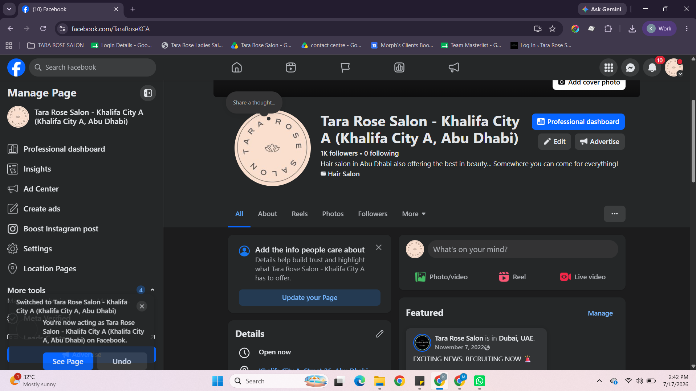
Khalifa City A — before.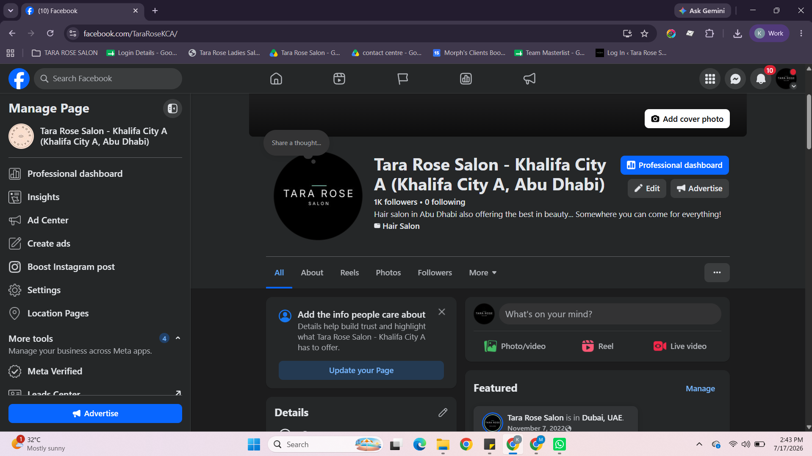
Khalifa City A — after.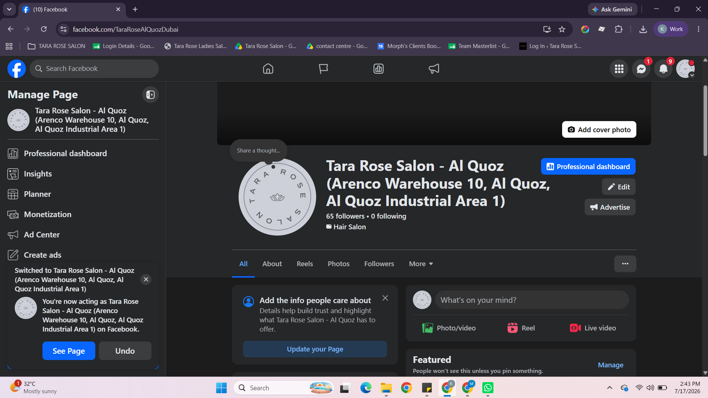
Al Quoz — before.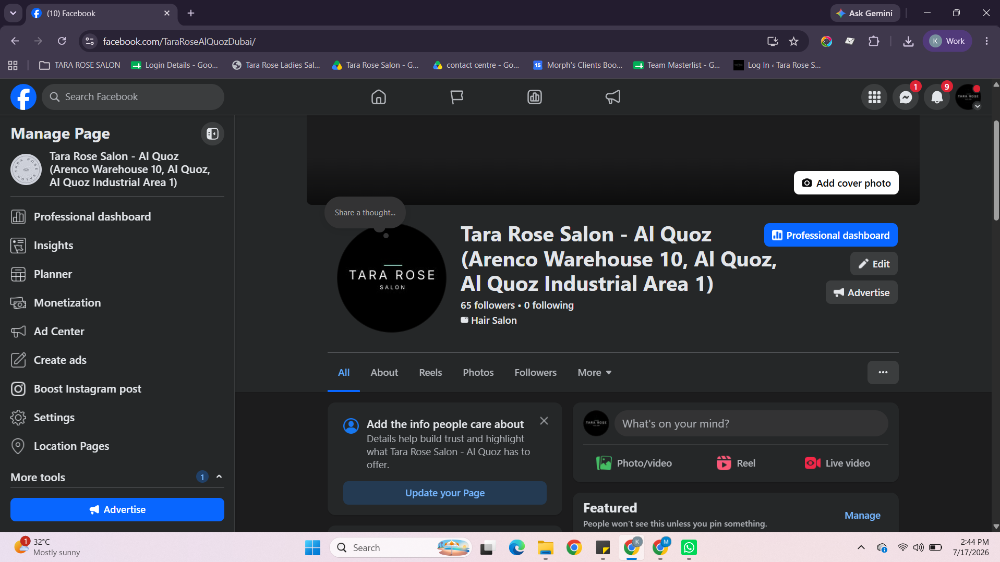
Al Quoz — after.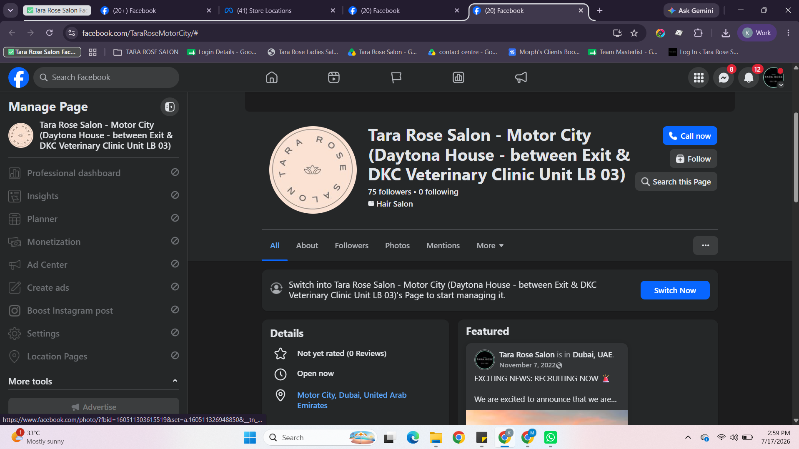
Motor City — before. Caught during this fix, not in the original 2-branch finding.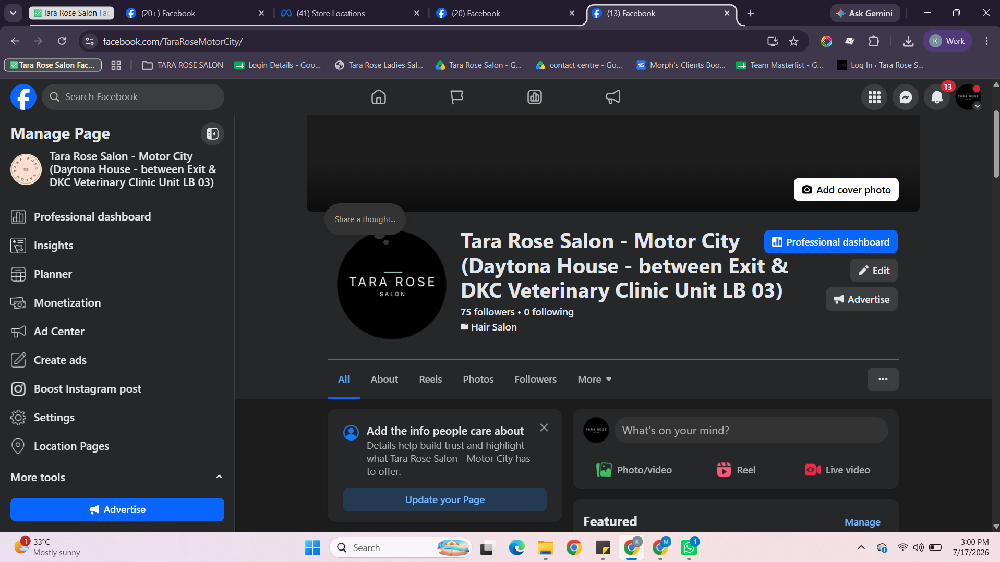
Motor City — after.Still to check: GBP profile photos per location, Instagram profile pic, website favicon.
- 10.NEW (17 July) — Facebook page structure: unbranded parent page carries a NAP inconsistency. Beyond the 4 branch-specific pages, there's a 5th, unbranded "Tara Rose Salon" page (facebook.com/tararosesalon) with 25K followers — by far the most-followed and most-active FB presence for the brand, using a distinct "TARA ROSE SALONS" (plural) ring logo. Its bio reads "Four salons across Dubai & Abu Dhabi," correctly implying a multi-location brand — but its About → Details → Address field is hardcoded to a single branch (Arenco Warehouse 10, Al Quoz). Ties directly into the P0 NAP errors already flagged in the Week 27 Ops Report. Recommend Owner B/Tara decide: clear the address field, or use Facebook's Locations/Store Locations feature to list all 4 branches properly.
Owner: B · Est: 15–30 min to fix the field; longer if switching to a proper multi-location setup
▸📎 View NAP inconsistency evidence facebook.com/tararosesalon — 25K followers, "Four salons across Dubai & Abu Dhabi" bio, distinct "TARA ROSE SALONS" ring logo. Most-followed and most-active FB presence for the brand.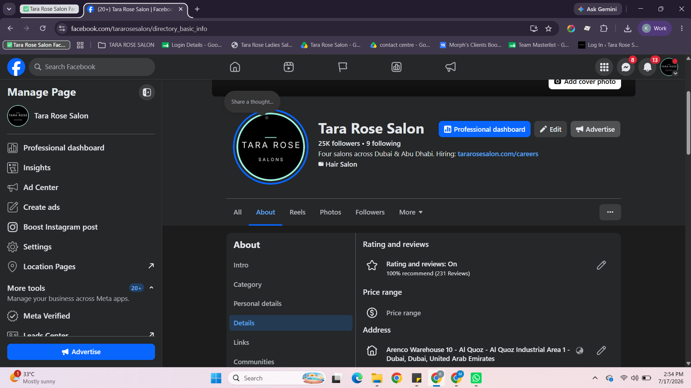
About → Details → Address on the same parent page — hardcoded to Al Quoz (Arenco Warehouse 10), despite representing all 4 branches. The NAP inconsistency. - 11.NEW (17 July) — "Janabiyah Quiz Hijack": popup takes over /en/bh/locations/janabiyah/ on load, blocking access in 11 of ~15 sampled sessions. Likely internal QA traffic, but independently reproducible.Owner: A, urgent · see 3.5
- 12.NEW (17 July) — Recurring "Can't find variable: beTracker" console error on multiple AE service/hair pages, likely a broken analytics/marketing script.Owner: A · Est: 30–60 min to trace · cross-ref 1.6, 4.3
- 13.NEW (17 July, via 1.3b) — ~78 of the 118 Search Console redirect URLs share one root cause: a 2-hop chain through "/education/beauty-insights/". Also: 7 unexplained Arabic (/ar/) locale stubs, and staging.tararosesalon.com is indexed by Google and should be noindexed/password-protected.Owner: A · Est: 1–2 hrs redirect cleanup, 15 min staging fix · see 1.3b
- 14.NEW (17 July, via 4.1) — 0 of 221 external links carry genuine marketing UTM tagging, including the WhatsApp booking CTAs — no way to attribute which page/source drives a WhatsApp lead.Owner: B · Est: 30–45 min to tag the WhatsApp links first · see 4.1
Block 1 — Technical Health (9 items)
1.1PageSpeed (mobile, field data)DONE — PASS▾
Notes / Evidence: Real-user CrUX data (28-day, UAE-majority traffic): LCP 1.6s mobile / 1.9s desktop, INP 113ms / 47ms, CLS 0 / 0.02. All origin-wide (CrUX has insufficient per-page data, falls back to site aggregate). Home page also scored via lab test: LCP 1.9s (US-West lab) / 1.6s (field, mobile) — pass.
Why it matters: LCP/CLS/INP are direct Google ranking factors and the biggest driver of mobile bounce rate.
▸📎 View live PageSpeed Insights links
- Home: pagespeed.web.dev — Home (mobile)
- Services / Menu / Pricing: pagespeed.web.dev — Services (mobile)
- Contact: pagespeed.web.dev — Contact (mobile)
- Locations: pagespeed.web.dev — Locations (desktop)
Some of these free-tier links may expire or need a fresh run after a period of time.
1.2Lighthouse (mobile, per-page)PARTIAL — 3 PASS / 1 FAIL / 1 tied to Home▾
Notes / Evidence: Home: 96/90/100/100 — PASS. Services page: 87/95/100/100 — FAILS on Performance (LCP 3.6–4s in US/EU regions vs 1.3s in Asia — points to CDN/caching, not page weight; only 588KB/12 requests). Locations page (/en/ae/locations/) now tested: 97/95/100/100 — PASS, LCP 1.2s (US-East)–1.7s (Australia). Contact page (/en/ae/contact/) now tested: 90/94/96/100 — PASS on aggregate, but flagged: LCP 3.4–3.5s on US West & Australia specifically (vs 1.3–1.8s elsewhere), above the 2.5s LCP pass bar from 1.1 even though the aggregate score clears ≥90. Booking page redirects to/mirrors Home — no independent report exists; it inherits Home's score once logged, status PENDING on that link only.
Why it matters: one combined score for performance, accessibility, best practices and SEO — fastest gut-check on page health.
▸📎 View full per-page Lighthouse breakdown
Two additional Lighthouse Metrics reports were pulled to complete the four-page requirement. Note: the original link labels were swapped in an earlier pass — corrected below based on the actual URL returned by each report.
1.2 — Locations page (/en/ae/locations/): PASS
| Metric | Result |
|---|---|
| Performance | 97 |
| Accessibility | 95 |
| Best Practices | 100 |
| SEO | 100 |
| LCP range across regions | 1.2s (US-East) – 1.7s (Australia) |
1.2 — Contact page (/en/ae/contact/): PASS (with flag)
| Metric | Result |
|---|---|
| Performance | 90 |
| Accessibility | 94 |
| Best Practices | 96 |
| SEO | 100 |
| LCP flag | 3.4s–3.5s on US West & Australia specifically (vs 1.3–1.8s elsewhere) — above the 2.5s LCP pass bar from 1.1, even though the aggregate score still clears ≥90 |
Booking page: redirects to/mirrors the Home page — no independent Lighthouse report was generated. Cannot be scored separately; inherits Home's score once that number is logged. Status: PENDING.
Live Lighthouse Metrics links:
- Home: lighthouse-metrics.com — Home
- Services / Menu / Pricing: lighthouse-metrics.com — Services
1.2bWebPageTest (supplementary, Tokyo node — closest available to UAE)PASS (soft flag)▾
Notes / Evidence: Homepage: LCP 1.8s, CLS 0.049, TBT 0ms — all pass. TTFB 1,018ms is slightly above the 0.8s "good" mark; Speed Index 4.29s is on the slower side. No UAE-specific test node exists on free tools; this + CrUX field data are the closest available proxies.
Why it matters: TTFB reflects server/CDN response time before rendering even starts — worth a look given schema/alt-text work is already queued for dev.
1.3aSearch Console — Core Web VitalsPASS▾
Notes / Evidence: Mobile: 0 poor, 0 needs improvement, 40 good URLs. Desktop: same — 0/0/40. Historical graph shows poor/needs-improvement URLs present in April, fully resolved by June. Last updated 7/14/26.
Why it matters: Google's own field-data view of page experience — complements CrUX/PageSpeed data with Google's direct assessment.
▸📎 View Core Web Vitals report screenshots
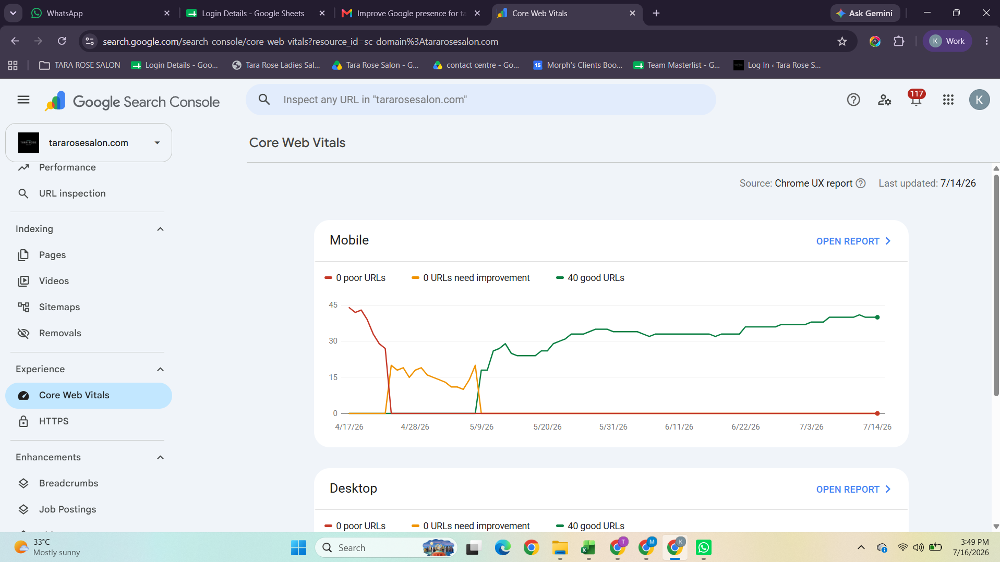
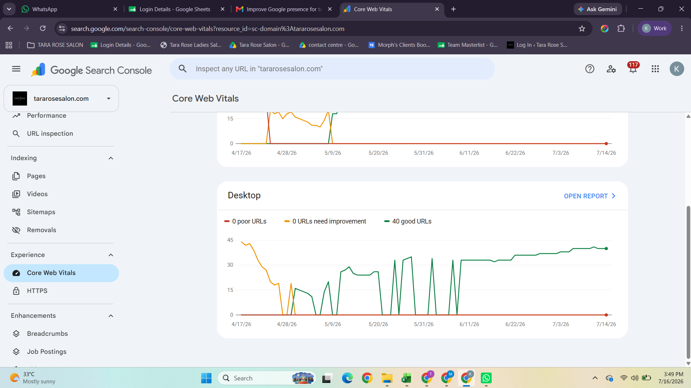
Requires kate@tararosesalon.com login. Core Web Vitals report · Overview / Performance
1.3bSearch Console — Indexing/PagesFAIL▾
Notes / Evidence: 227 pages with issues vs. 97 indexed. Breakdown: 118 page with redirect, 40 crawled-not-indexed, 38 excluded by noindex tag, 24 not found (404), 6 discovered-not-indexed, 1 blocked (4xx). Both the 118 and the 24 have now been triaged down to individual URLs (17 July): of the 24 404s, 12 are real orphaned/broken pages (priority: a staging site, staging.tararosesalon.com, is indexed by Google), 5 are wildcard/pattern artifacts (ignore), 4 are old recruitment PDFs (verify), 3 are Bahrain service pages (pending Tara/Owner decision). Of the 118 redirects, ~78 share one root cause — a 2-hop chain through a middle "/education/beauty-insights/" URL before reaching the final page — same pattern Screaming Frog found at smaller scale (7 chains, see 1.4); ~36 are expected single-hop migration redirects (no action); 7 are unexplained Arabic (/ar/) locale stubs (new finding, flag to Owner A/Tara); 1 Bahrain, 2 misc.
Why it matters: High redirect/404 counts waste crawl budget and can suppress indexing of pages that should rank. See Top Fix #6.
▸📎 View full URL breakdown / triage tables
Source: Search Console → Indexing → Pages, property tararosesalon.com. Coverage summary export (7/17) + two URL-level drilldown exports ("Page with redirect" and "Not found (404)"). Compiled 17 July 2026.
"Not Found (404)" — 24 URLs Triaged
| Group | Count | Examples | Verdict |
|---|---|---|---|
| A — Wildcard/pattern artifacts | 5 | /en/*, /wp-*.php, /wp-content/themes/* | Not real pages — ignore, no fix needed |
| B — Bahrain service pages | 3 | /en/bh/services/hands-feet/, /face/, /body/ | Known issue — pending Tara/Owner decision (restore vs. remove) |
| C — Old recruitment PDFs | 4 | SENIOR-STYLIST.pdf, STYLIST.pdf, etc. | Likely intentional cleanup — verify no live link still points here |
| D — Real broken/orphaned pages | 12 | Staging site (indexed!), old SEO landing pages, /septem, blog pagination, RSS feed | Actionable — see notes below |
Group D detail — the real action items
- Staging site indexed by Google (staging.tararosesalon.com/.../manicures/) — flag to dev directly: staging should be noindexed or password-protected. Separate fix from any redirect work.
- Old SEO landing pages (hair-and-beauty-salon-in-abu-dhabi/, hair-salon-in-al-bateen/, massage-and-facial(s)-in-abu-dhabi/) — check Screaming Frog "Inlinks" tab per URL; redirect to current equivalent if still linked internally, otherwise safe to ignore.
- Blog pagination (/category/blog/page/2/, /page/3/) and tag/feed URLs — low priority, likely from an old blog structure no longer in use.
- email.sales.tararosesalon.com — different subdomain (email/marketing tool), not the main site — no action on tararosesalon.com itself.
"Page with Redirect" — 118 URLs Triaged
| Group | Count | Examples | Verdict |
|---|---|---|---|
| A — Domain/protocol normalization | ~5 | http→https, non-www→www, bare domain | Expected — ignore |
| B — Old /ae/ pages (missing /en/ prefix) | ~31 | /ae/services/, /ae/pricing/, /ae/careers/ | Expected single-hop migration redirect — no new action |
| C — 2-hop chain pattern (old slug → beauty-insights slug → final URL) | ~78 | /celebrate-with-us/ AND /education/beauty-insights/celebrate-with-us/ both listed separately | ACTIONABLE — same root cause as the 7 chains Screaming Frog found, much larger in volume. Fix internal links to point straight to final URL and collapse to 1 hop. |
| D — Arabic locale stubs (/ar/...) | 7 | /ar/ae/services/hair/colour/, /ar/*, /ar/ae/wellness/ | NEW FINDING — not previously documented. Flag to Owner A/Tara: is an Arabic site planned, or are these stray stubs to clean up? |
| E — Bahrain | 1 | /en/bh/locations/janabiyah | Known issue — same as Group B in the 404 list |
| F — Misc | 2 | pricelist-stylist.pdf, /feed/ | Low priority — verify PDF is current |
Group C detail — the priority fix
- The biggest chunk of the 118 (~78 URLs) is not simple single-hop redirect noise — it's dozens of old blog/promo URLs chaining through a middle "/education/beauty-insights/[slug]" step before reaching the final /en/education/beauty-insights/[slug] URL.
- This is the same underlying issue Screaming Frog already flagged as "7 redirect chains, all 2-hop" — this drilldown shows the true scale is much bigger.
- Fix: update internal links (in old blog content, any remaining nav/sitemap references) to point directly to the final URL, removing the middle hop across this whole batch.
Recommended Next Steps (from the 1.3b compile)
- Priority 1 — Confirm staging.tararosesalon.com is not meant to be public; add noindex or password-protect. (Owner A)
- Priority 2 — Update internal links behind the ~78-URL 2-hop chain pattern so they point straight to the final /en/education/beauty-insights/... URL. (Owner A)
- Priority 3 — Confirm with Tara/Owner B whether an Arabic (/ar/) site is planned; if not, these 7 stubs can be left as-is or cleaned up. (Owner B + Tara)
- Priority 4 — Confirm Bahrain service-page and location decision (restore vs. remove) — same call needed for both the 404 and redirect Bahrain entries. (Tara/Owner A)
- Lower priority — verify old SEO landing pages and recruitment PDFs have no remaining internal links pointing to them; if none, no action needed.
▸📎 View raw coverage export + indexing trend
The full Indexing → Pages coverage report (source of the 227-issues-vs-97-indexed breakdown) was exported directly from Search Console and is attached as a companion file: tararosesalon_com-Coverage-2026-07-16.xlsx. It contains three sheets — Chart (daily indexed/not-indexed trend since April), Critical issues (the reason-by-reason breakdown below), and Non-critical issues (currently empty, zero rows). Open the attached file directly for exact URL-level detail when investigating the 118 redirect pages.
Critical issues — full breakdown (as of 7/16/26)
| Reason | Source | Validation | Pages |
|---|---|---|---|
| Page with redirect | Website | Not Started | 118 |
| Crawled – currently not indexed | Google systems | Not Started | 40 |
| Excluded by 'noindex' tag | Website | Not Started | 38 |
| Not found (404) | Website | Not Started | 24 |
| Discovered – currently not indexed | Google systems | Not Started | 6 |
| Blocked due to other 4xx issue | Website | Not Started | 1 |
| Blocked due to access forbidden (403) | Website | N/A | 0 |
| Blocked by robots.txt | Website | N/A | 0 |
| Alternate page with proper canonical tag | Website | N/A | 0 |
Total: 227 pages with issues vs. 97 pages currently indexed. "Validation: Not Started" means Google has flagged these but no fix has been submitted for re-crawl yet — that's the next step once Owner A addresses the underlying cause.
Indexed vs. Not-indexed trend (selected dates from Chart sheet)
| Date | Not Indexed | Indexed | Impressions |
|---|---|---|---|
| 4/17/26 (earliest) | 170 | 94 | 1,308 |
| 5/5/26 | 219 | 71 | 971 |
| 6/2/26 (mid-range) | see file | see file | see file |
| 7/10/26 (latest) | 227 | 97 | 1,439 |
Note: "not indexed" is trending up slightly alongside impressions also trending up — worth watching but not necessarily alarming on its own; the redirect/404 breakdown above is the more actionable signal.
1.3cSearch Console — Mobile UsabilityN/A▾
Notes / Evidence: Report deprecated by Google; folded into Core Web Vitals. No separate check remains — see 1.3a.
Why it matters: Historical checklist item; superseded by Google's own product changes.
1.4Crawl — 4xx/redirectsFAIL▾
Notes / Evidence: Full crawl now complete: 471/471 URLs (100%), 250 internal URLs. 14 real 4xx (all Bahrain /en/bh/services/... 404s, same root cause as the 1.3b group). 26 "5xx" are false positives (twitter.com share links blocked as a bot, not a site issue). 7 unique redirect chains found, all exactly 2-hop, tracing to the same /en/ae/ locale migration — no loops, no deeper chains. Root cause shared with 4xx: internal links never updated after the locale migration.
Why it matters: Broken links and multi-hop redirects waste crawl budget and erode trust at a dead end.
▸📎 View full Screaming Frog crawl detail
Crawl completed: 471 of 471 URLs (100%). 250 internal URLs total — 156 HTML, 90 Images, 3 JavaScript, 1 CSS.
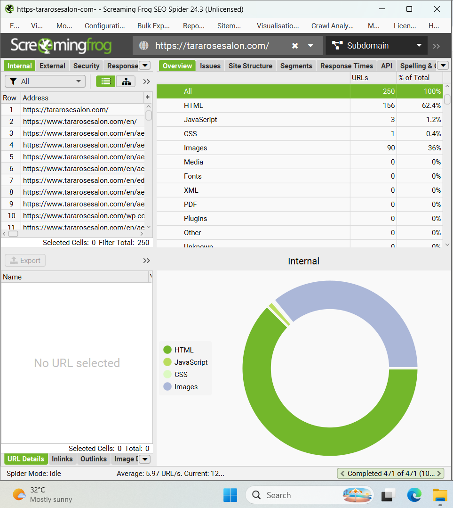
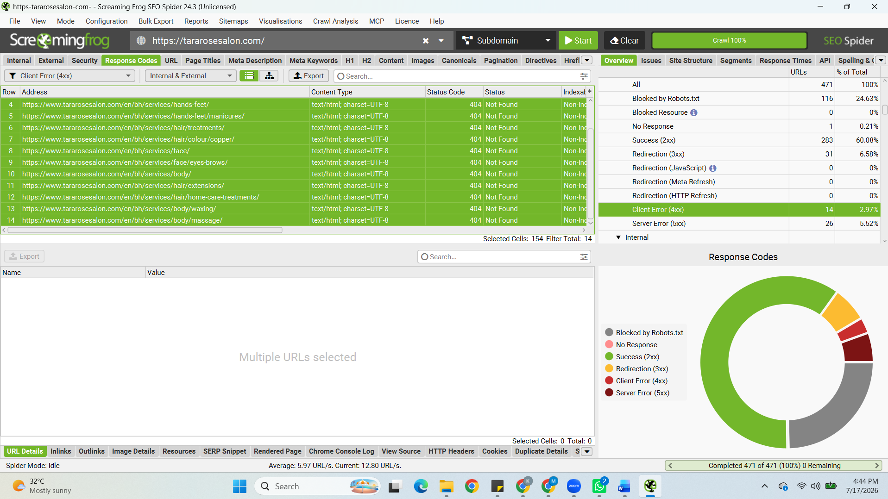
Client Errors (4xx) — 14 found. All 14 are 404 Not Found, and all fall under the same path structure: /en/bh/services/... (Bahrain locale service pages).
| # | URL (path) |
|---|---|
| 1 | /en/bh/services/hair/packages/ |
| 2 | /en/bh/services/face/facial-treatments/ |
| 3 | /en/bh/services/hands-feet/pedicures/ |
| 4 | /en/bh/services/hands-feet/ |
| 5 | /en/bh/services/hands-feet/manicures/ |
| 6 | /en/bh/services/hair/treatments/ |
| 7 | /en/bh/services/hair/colour/copper/ |
| 8 | /en/bh/services/face/ |
| 9 | /en/bh/services/face/eyes-brows/ |
| 10 | /en/bh/services/body/ |
| 11 | /en/bh/services/hair/extensions/ |
| 12 | /en/bh/services/hair/home-care-treatments/ |
| 13 | /en/bh/services/body/waxing/ |
| 14 | /en/bh/services/body/massage/ |
Server Errors (5xx) — 26 found, all false positives. All 26 are http://twitter.com/share?url=... — external Twitter/X share-button links embedded in blog posts, not pages on tararosesalon.com. Status 520 is Cloudflare's generic error, returned here because Twitter/X is blocking Screaming Frog's crawler as a bot — this does not reflect a problem with the TRS site itself.
Redirect Chains (> 1 hop) — 7 unique chains found. All chains are exactly 2 hops (none deeper), no loops. Two repeating patterns, both tracing back to the same root cause as the 404s above: a locale-prefix (/en/ae/) migration where old internal links were never updated.
| Pattern | Example chain |
|---|---|
| A — bare domain → /en/ → /en/ae/ | tararosesalon.com/ → (301) → www.tararosesalon.com/en/ → (302) → www.tararosesalon.com/en/ae/ (200) |
| B — pre-locale blog URL → adds /en/ | tararosesalon.com/roses-magazine → (301) → .../education/beauty-insights/ → (301) → .../en/education/beauty-insights/ (200) |
7 unique chain destinations affected: bare tararosesalon.com/, bare www.tararosesalon.com/, /roses-magazine, /roses-magazine/, /welcome-back/, /nail-care-salon-in-abu-dhabi/, /summer-offers/ — several hit repeatedly by different internal blog-post links (e.g. /summer-offers/ is the chain target for 3 separate source links).
Root cause (shared): site migrated to the /en/ae/ locale URL structure, but internal links inside blog content and old service paths were never updated — same underlying cause behind both the 404s and the redirect chains. Fix direction: update internal links in the content itself (not just add server-side redirects) so they point directly to the final /en/... URL, reducing hops. For the /bh/services/ 404s specifically: decide whether the Bahrain service pages should be restored or the dead internal links removed.
1.5Image alt textFAIL▾
Notes / Evidence: 56 of 60 <img> tags on the homepage have alt="". Full-site audit (90 images total) confirms the pattern sitewide:
Hero images affected: brunette-hair-colour-hero.jpg, kc-hero.jpg, mamsha-5.jpg, our-story-hero.jpg, contact-hero.jpg, +23 others. Highest priority (missing alt AND over 200KB): brunette-hair-colour-hero.jpg, kc-hero.jpg, mamsha-5.jpg, insights-page.jpg.
Why it matters: Screen readers announce nothing; Google indexes images with zero context. Both an accessibility and image-SEO loss.
▸📎 View full image optimisation tables
Source: Images tab export (90 images total) + Missing Alt Text filter export (28 images).
| Image over 200KB | Size | Format |
|---|---|---|
| blog.png | 295 KB | PNG |
| brunette-hair-colour-hero.jpg | 283 KB | JPEG |
| education-hub-hero.jpg | 231 KB | JPEG |
| mamsha-5.jpg | 225 KB | JPEG |
| kc-hero.jpg | 215 KB | JPEG |
| insights-page.jpg | 213 KB | JPEG |
| hair-colour-hero.jpg | 200 KB | JPEG |
| Highest-priority overlap (missing alt AND >200KB) | Size | Alt text |
|---|---|---|
| brunette-hair-colour-hero.jpg | 289 KB | Missing |
| kc-hero.jpg | 220 KB | Missing |
| mamsha-5.jpg | 231 KB | Missing |
| insights-page.jpg | 218 KB | Missing |
1.6HTTPS / Console errorsFAIL▾
Notes / Evidence: Live console check completed 7/17 (2:00–2:10 PM) on Home, Services, Contact, Locations, and the chat widget. Zero mixed-content/HTTP issues — clean. But every page throws the same 5 [LC Tracking ERROR] messages, all pointing to a missing data-tracking-id attribute on the Live Chat script tag (required attribute not found; failed to initialize; external tracking failed). Likely the same root cause behind the broken booking widget submit — see Top Fix #2 / 4.6.
Why it matters: Mixed content triggers browser security warnings and can silently block resources.
▸📷 Click here for console screenshots (5 pages, before/after refresh)
Chrome DevTools Console opened (Ctrl+Shift+I) then the page refreshed (Ctrl+R) to catch load-time errors, on each of the 5 test pages plus the booking chat widget. The same 5 [LC Tracking ERROR] messages recur every time.
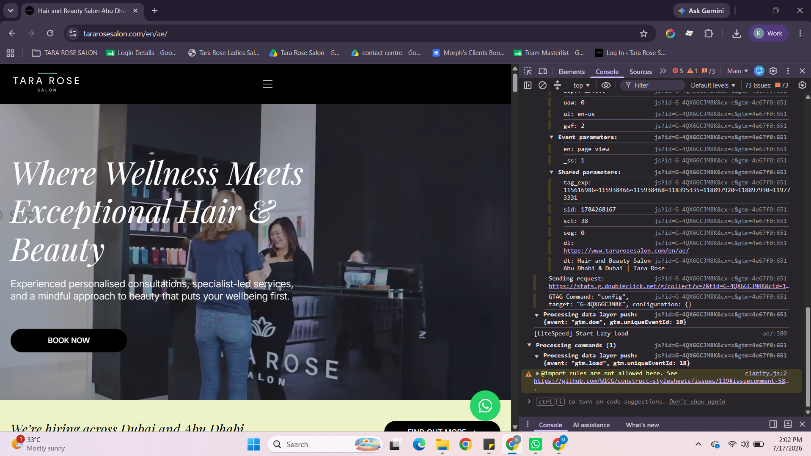
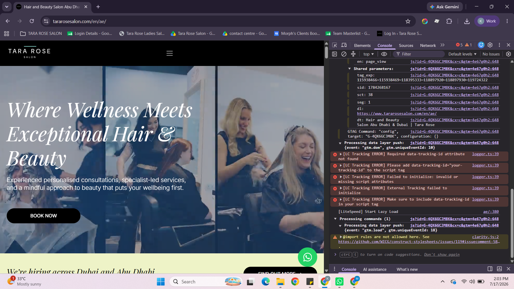
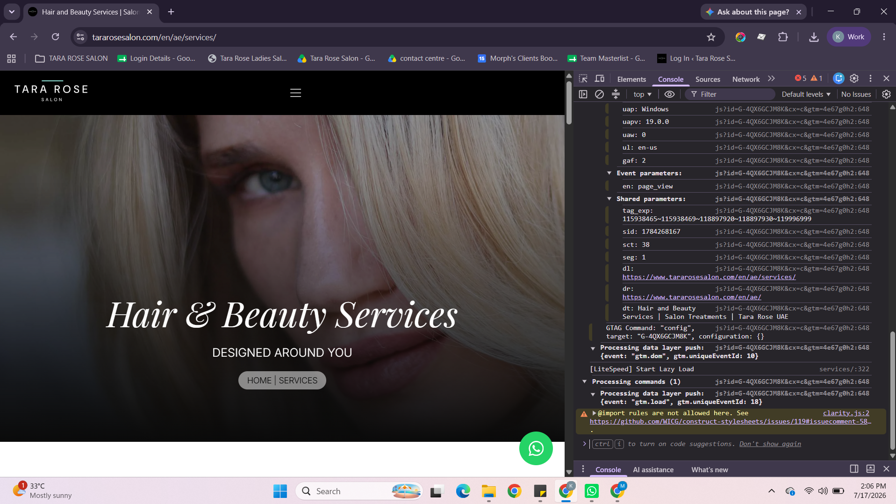
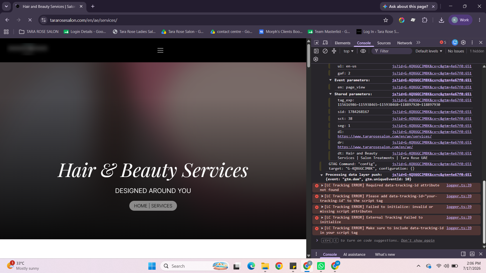
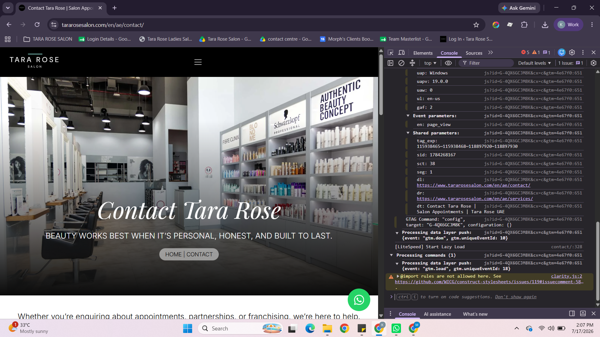
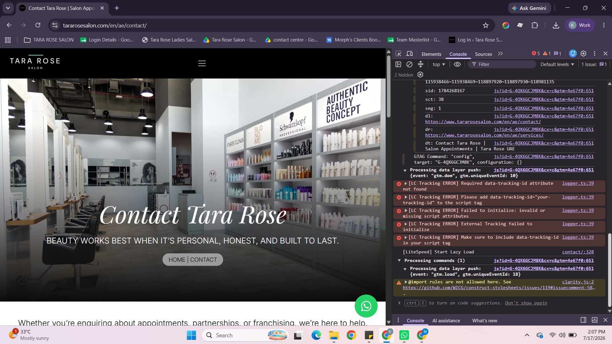
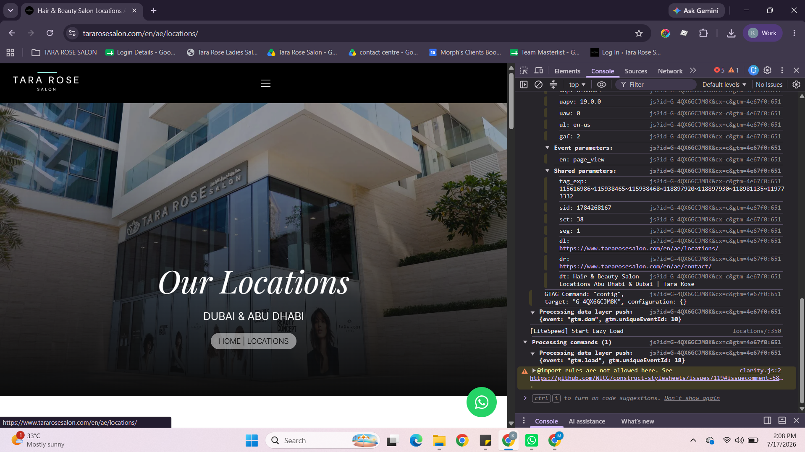
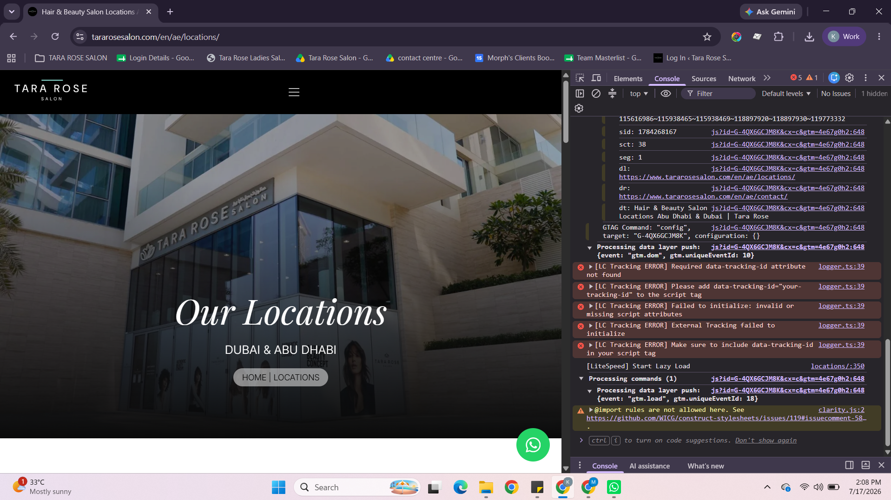

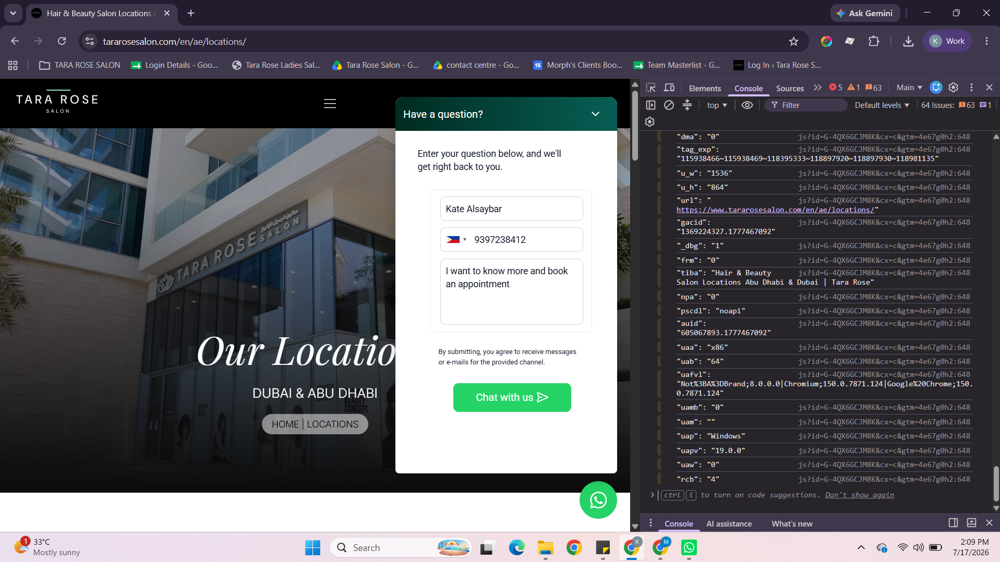

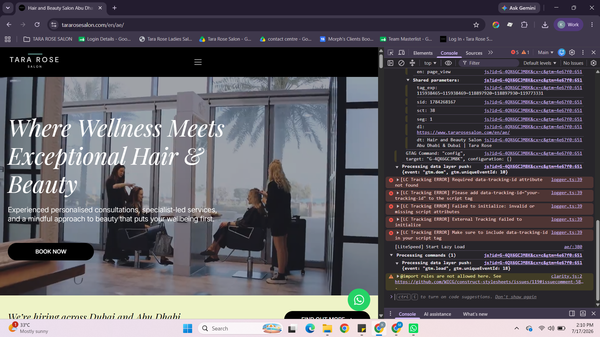
Block 2 — SEO & Structured Data (6 items, unchanged from original run)
2.1Titles / metas / H1sPASS▾
Notes / Evidence: Sampled 6 pages: every title/meta unique and on-length; one H1 per page.
Why it matters: Unique titles/metas drive click-through; duplicates confuse Google about which page to rank.
2.2Lexicon complianceFAIL▾
Notes / Evidence: Full audit of titles/metas against the TRS Menu Lexicon banned-word list (17 July) found 3 hits: "guarantee" on the homepage (inside the Confidence Promise section — this one is a content decision, not a simple rewrite, since 4 different phrasings of the same guarantee already exist brand-wide, see Top Fix #8); "premium" and "upsell" on the Mamsha Al Saadiyat page (straightforward rewrites, no known side effects). Separately, the lexicon's ban on "problem"-naming language (banding, brassiness, box dye) may be limiting AI-search visibility for colour-correction queries, where competitors using that language rank ahead of TRS (see 5.3). Needs one combined decision from Tara/Owner B rather than 3 separate fixes.
Why it matters: Consistent brand language keeps every page sounding like one salon. See Top Fix #5.
2.3Structured data (schema)FAIL▾
Notes / Evidence: Zero LocalBusiness or Service schema anywhere on the site. See Top Fix #1. Separately, the Recruitment Touchpoints tracker confirms JobPosting schema was added to /careers via a custom HTML block (13 July, verified via Rich Results Test) — doesn't cancel out this fix (different schema type) but confirms the site CAN carry valid JSON-LD, useful precedent for Owner A when implementing.
Why it matters: Schema feeds Google's local pack, rich results, and how AI engines describe you by name.
2.4Canonical URLsPASS▾
Notes / Evidence: Every page checked has one correct self-referential canonical.
Why it matters: Stops Google from splitting ranking signal across duplicate URLs.
2.5SitemapFAIL▾
Notes / Evidence: See Top Fix #4 — tararosesalon.com/sitemap.xml returns 404 (real sitemap lives at /en/sitemap_index.xml).
Why it matters: Sitemap is how search engines efficiently discover every page you want indexed.
2.6Robots.txtPASS▾
Notes / Evidence: No Disallow: / or blocked public paths.
Why it matters: Confirms nothing important is accidentally hidden from search engines.
Block 3 — Behaviour (5 items — GA4, Clarity, Vercel)
3.1GA4 firing checkIN PROGRESS — unresolved▾
Notes / Evidence: GTM is firing but to the wrong GA4 property, and the correct tag is staged but not yet live due to a server-level caching issue. See New Finding #5 for the full root-cause writeup (GTM-N6KPVCNF hardcoded in inc/analytics-pixels.php, sending to G-4QX6GCJM8K instead of the real property G-7W4EZVYKJV). Status: unresolved, needs hosting-level access.
Why it matters: Without correct GA4 tracking, none of the downstream conversion/attribution work in Block 4 can be trusted.
3.2Microsoft Clarity installDONE — PASS▾
Notes / Evidence: Confirmed fully working and populated. Script added via a GeneratePress Elements Hook (wp_head, Display Rules set to "Entire Site"), LiteSpeed cache purged. Verified live: window.clarity returns a function on tararosesalon.com, and the clarity.ms tag is present in the page <head>. Dashboard is now live and populated: 259 sessions, 207 unique users, with Rage Clicks, Dead Clicks, and Excessive Scrolling data all flowing — this is the data source behind 3.5's mobile session review below.
Why it matters: This is the raw session-recording data feeding the Janabiyah quiz-hijack and beTracker findings — a working install is the foundation for all of Block 3's behavioural analysis.
3.3Vercel AnalyticsN/A▾
Notes / Evidence: Confirmed tararosesalon.com is hosted on WordPress, not Vercel — page metadata shows WPML (multi-language plugin, powers the /en/ae/ and /en/bh/ URL structure), all image/asset paths use the wp-content/uploads/ structure, and the site runs on the GeneratePress theme with GP Premium (used above to install the Clarity hook). Vercel Analytics only works for sites actually deployed on Vercel's own hosting infrastructure, so this check doesn't apply here.
Why it matters: No further action needed for 3.3.
3.4GA4 30-day report (Jun 16 – Jul 15, 2026)PULLED — flags a likely wrong-property issue▾
Notes / Evidence: Sitewide totals: 5 views, 3 sessions, 33.33% engagement rate, 18s average engagement time. Landing pages: "/" (homepage) 2 of 3 sessions (66.7%); "(not set)" 1 session (33.3%) — only 2 distinct landing pages exist in this window, not a top-10. Exit pages: "/" and "/en/bh/locations/janabiyah/" each with 1 exit (2 total, evenly split). Device split: exactly 50% desktop / 50% mobile (1 active user each). Pages and screens detail: "/" 2 views; "/bh/locations/bahrain" 1 view; "/en/bh/locations/bahrain" 1 view; "/en/bh/locations/janabiyah/" 1 view.
Flag: traffic volume is far too low for a live business site, and several page paths (/bh/locations/bahrain, /en/bh/locations/janabiyah/) look like Bahrain location pages, not what's expected from the main UAE property. This lines up with Finding #5 — the GA4 property currently accessible may not be the one actually receiving live tararosesalon.com (UAE) traffic. Recommend confirming property/data stream settings before treating this as representative for the audit.
3.5Mobile session review (Clarity)FAIL▾
Notes / Evidence: Full CSV export of 300 recordings (237 unique sessions, last 3 days) reviewed instead of the checklist's literal Page=/booking filter, since no /booking page exists on the site (booking is external via Phorest/chat/WhatsApp — cross-logged against 4.6). ~15 sessions reviewed in detail, prioritized by click count/duration on services, locations, and pricing pages.
Critical finding: an "Janabiyah Quiz Hijack" — a giveaway/quiz popup takes over /en/bh/locations/janabiyah/ almost immediately on load in 11 of ~15 sessions, blocking access to real location/booking content; traffic is mostly UK-based (Instagram/Linktree), likely internal QA testing but the bug is independently reproducible. Also found: a recurring "Can't find variable: beTracker" console error across multiple AE service/hair pages (cross-ref 1.6 — likely a broken analytics/marketing script, could silently affect conversion tracking feeding 4.3/GA4); and a pattern of high-intent users on the Abu Dhabi AE location pages repeatedly tapping Book Now/Chat (4–5 times in one session) without a visibly confirmed booking completion — not a clear bug from logs alone, flagged for a manual video watch alongside 4.2/4.5.
Why it matters: real-user behaviour is the only way to catch a booking-blocking bug like this that automated checks would miss entirely.
▸📎 View full session-evidence breakdown
Method / sampling note: a full CSV export of 300 recordings (237 unique sessions, last 3 days) was pulled from Clarity. Per the checklist instruction, a random-style sample was reviewed rather than all sessions. Sessions were prioritized by highest click count and duration among mobile sessions exiting on services, locations, or pricing pages, used as a proxy since the site has no dedicated /booking URL. Roughly 15 sessions had their full event logs reviewed in detail.
Finding 1 — "Janabiyah Quiz Hijack" (Critical)
- Affected page: /en/bh/locations/janabiyah/
- Sessions affected (of sample): 11 of roughly 15 reviewed sessions landing on this page
- Traffic source: Instagram link-in-bio and Linktree, mostly UK-based devices (Liverpool, Caterham). Flagged as likely internal QA testing rather than lost real leads, but the underlying bug is independently reproducible and confirmed by this pattern.
- What happens: a giveaway/quiz popup ("Every founding member...", "Enter to Win & Shape the...") takes over the page almost immediately on load. Every affected session has only 1 page view, meaning users never reach real location or booking content.
- Observed friction: in the first 5 to 15 seconds, users rage-click or dead-click 6 to 8 times on two elements, "Complete [X] BHD Transformation" and "PLUS: Fabulous Women..." banners, before the quiz form fully engages. Session fwdfxa (00:08-00:23) and 1o7ox9g (00:07-00:08) both show an initial dead click plus repeated taps on the same non-responsive banner text.
- Then funneled into: a multi-step quiz (hair concerns, appointment frequency, occupation) ending in a phone-number capture field and a Next button. Recording windows end before a final Submit is confirmed in every sampled case, so completion rate is unknown.
- Session evidence: fwdfxa, 1qm5zg7, 96d1ld, zb7wla, 1yyacyp, 2lmwkc, g73l32, o5injt, 5nys5e, 1o7ox9g
- Recommended checklist status: Fail, high-priority fix. Popup should not block access to location info or the Book Now CTA on first load.
Finding 2 — Recurring "beTracker" JavaScript Error
- Cross-reference: also logged against Item 1.6, HTTPS + console errors.
- Error text: "Can't find variable: beTracker" fires on page load across multiple AE service/hair pages.
- Sessions affected: 1r8iaho, zl03xo, 62a207, 19tmz7u
- Secondary error (1 session): "undefined is not an object (evaluating window.webkit.messageHandlers)", session 1o7ox9g, likely a mobile webview API issue.
- Why it matters: likely a broken or missing analytics/marketing tracking script. Could silently affect conversion-tracking accuracy feeding into Item 4.3 (GHL cross-check) and GA4 reporting. Recommend Owner A (dev) trace the beTracker reference.
- Recommended checklist status: Fail (console not clean), flag for dev.
Finding 3 — High Booking Intent, But Repeated Attempts on AE Location Pages
- Affected pages: /en/ae/locations/abu-dhabi/mamsha-al-saadiyat/, /en/ae/locations/abu-dhabi/khalifa-city/
- Pattern: users show high intent (Clarity-tagged "High") and repeatedly trigger the Book smart event and Book Now clicks, sometimes 4 to 5 times within a single session (e.g. session 62a207: 5 Book Now taps across 7 minutes, spanning 3 pages), plus multiple Chat with Us clicks, without a visibly confirmed booking completion in the recording.
- Session evidence: 62a207 (7:23 duration, 22 clicks, 13 pages), nvtyxk (several short sessions returning to Book/Chat repeatedly), 1r8iaho (28+ minute session, re-engages with Book Now and chat after a long idle gap)
- Interpretation: not clearly a bug from event logs alone. Could indicate friction in the booking form or chat widget (too many steps, unclear confirmation state) causing users to retry. Recommend pairing with an actual video watch of session 62a207 or 1r8iaho, and cross-checking against Item 4.2 (GA4 funnel drop-off) and Item 4.5 (real-phone form test).
- Recommended checklist status: flag for follow-up, not a clear fail, but worth a manual watch before sign-off.
Summary for Checklist Section 3.5
| Field | Content |
|---|---|
| Status | Fail |
| Sessions reviewed | Roughly 15 of 237 total mobile-eligible sessions (random-priority sample, not exhaustive, see method note above) |
| Findings | 1. Janabiyah quiz popup blocks location/booking access (critical), 11 sessions. 2. Recurring beTracker JS console error on AE pages, cross-ref 1.6. 3. Repeated Book Now/Chat attempts on AE location pages suggest booking-form friction, cross-ref 4.2, 4.5. |
| Cross-references | Items 1.6, 4.2, 4.3, 4.5, 4.6 |
Block 4 — Conversion & Attribution (6 items — UTM, funnel, GHL, Phorest, mobile forms, Book-button test)
4.1UTM tagging disciplineFAIL▾
Notes / Evidence: Of 221 total external links (Screaming Frog External tab):
Highest priority — untagged: the brand's own Facebook/Instagram profile links, and the wa.me/wa.link WhatsApp booking CTAs (likely same flow as mobile "Book Now"). No way to attribute which page/source drove a WhatsApp lead — feeds into 4.3/4.4. Recommend tagging WhatsApp links first.
Why it matters: without tagging, marketing spend can't be tied to bookings. See Top Fix #14.
▸📎 View full UTM tagging audit
Source: Screaming Frog External tab export, 221 total external links.
Headline finding: Only 2 of 221 external links carry any UTM parameter — and both are Instagram's own auto-generated embed params (utm_source=ig_embed&campaign=loading), not manually-set marketing UTMs. Effectively 0 of 221 links have genuine marketing-intent UTM tagging.
Untagged link breakdown by platform
| Platform | Count | Notes |
|---|---|---|
| TikTok | 43 | Mostly embed/hashtag links inside blog content |
| 28 | Includes brand profile link + share buttons | |
| 27 | Share buttons + company page link | |
| WhatsApp (api.whatsapp.com) | 27 | Pre-filled share messages |
| 26 | Share/pin buttons | |
| Twitter/X | 26 | Share buttons |
| 6–8 | Brand profile link | |
| YouTube | 1 | Brand channel link |
| wa.me / wa.link | 4 | Direct WhatsApp booking links |
Highest-priority untagged CTAs
- facebook.com/tararosesalon/ and instagram.com/tararosesalon/ — own brand profile links, untagged.
- wa.me/97144572309 and 3× wa.link/... — direct WhatsApp booking CTAs, likely the same booking flow used in the mobile "Book Now" path. Without UTM, there's no way to attribute which page/source drove a WhatsApp booking lead.
Other non-social external links flagged (not marketing CTAs, but noted)
- go.tararosesalon.com/kca — own tracking/campaign short-link, untagged in its own right
- 3× scnv.io/... — third-party link shortener, campaign unclear
- 2× forms.gle/... — Google Forms, likely job-application forms
- dropbox.com/.../donations list.pdf — external file link
- inphota.com/...pink-run — event partnership link
- skyebluhealing.com, chaselifeconsulting.com, healingwaves.me — partner/collab wellness sites linked from blog content
4.1 — Consolidated Verdict: Status FAIL — 0 of 221 links carry genuine marketing UTM tagging (pass bar: zero untagged marketing CTAs). Recommended priority: tag the WhatsApp booking links (wa.me, wa.link) first, since they sit directly in the conversion funnel — before addressing lower-priority share buttons.
4.2GA4 funnel map⏳ Pending Start▾
4.3GHL cross-check⏳ Pending Start▾
4.4Phorest cross-check⏳ Pending Start▾
Notes / Evidence: Not started. Per Kate's actual booking flow, Phorest is correctly internal/manual-only — existing clients are booked there directly by the team, not through the website. This cross-check would confirm that mapping stays consistent once other Block 4 items are resolved.
4.5Real-phone form testPARTIAL▾
Notes / Evidence: Tested live on an actual Android phone, 17 July. Important new finding: on mobile, "Book Now" hands off differently than on desktop — it opens the same in-site form, but on submit it routes into native WhatsApp Business chat (Meta-secured), not the broken desktop widget. First attempt hit an "Invalid value" error on the phone field; corrected and resubmitted, then WhatsApp opened with the message pre-filled and sent successfully, returning "Thank you — We will get back to you shortly." Timed at 1:02.62 with a stopwatch, thumb-only — just over the checklist's 60-second pass bar (partly due to the phone-field retry). Functionally the mobile path works end-to-end: WhatsApp followed up with a full structured auto-reply, not just a bare confirmation. The desktop widget failure (Top Fix #2 / 4.6) does not reproduce on mobile. Recommend Owner A investigate why desktop and mobile behave differently — worth checking if this is a device-conditional script that's only broken on desktop.
Why it matters: confirms the mobile booking path is functionally sound even while desktop is broken — narrows the fix scope for Owner A.
▸📷 Click here for the full step-by-step test evidence
Tested live on an actual Android phone, thumb-only, timed with a stopwatch.
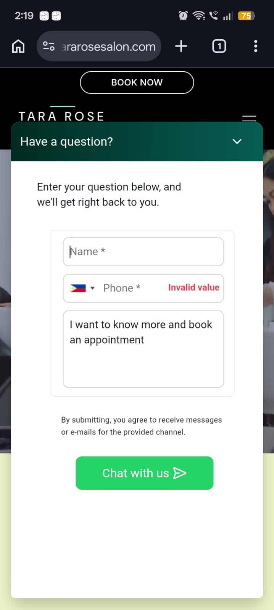
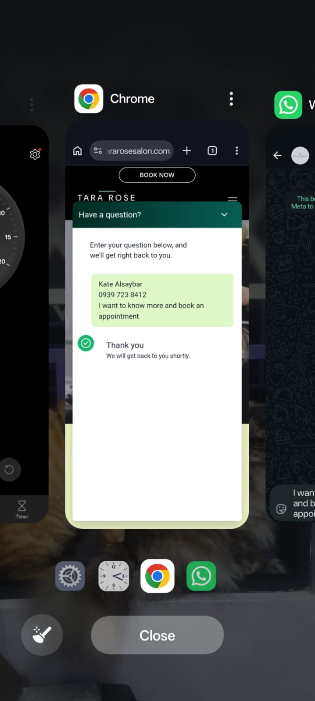
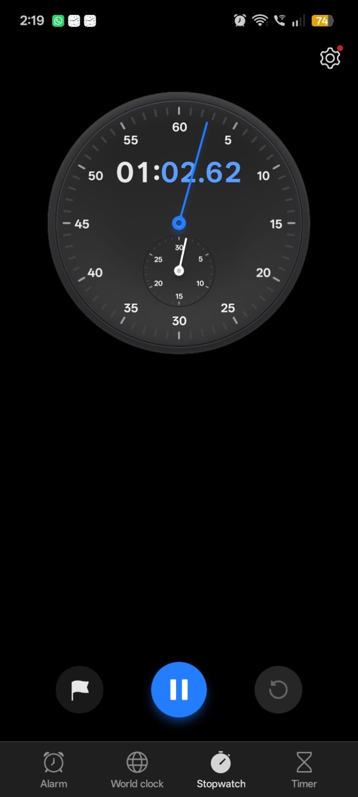
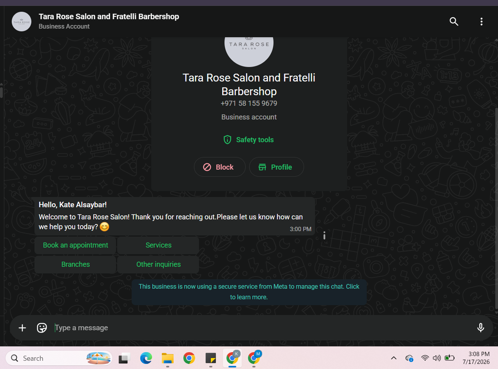
4.6Booking channel test (reframed from Phorest deep-link, per actual ops flow)FAIL▾
Notes / Evidence: Confirmed via live screenshot 7/17 (1:55 PM): "Book Now" opens the in-site chat widget, not Phorest — Phorest is correctly internal/manual-only per Kate's actual booking flow (new leads via GHL from WhatsApp/IG/FB/TikTok, existing clients via Respond.io). The real pass bar is whether the widget successfully captures the lead into GHL — it does not: submitting returns a red "Failed" / "Try Again!!" status (test: name Kate Alsaybar, phone 9397238412, message "I want to know more and book an appointment"). 100% of visitors hitting the primary CTA currently hit a dead end. Likely tied to the same missing data-tracking-id script error logged under 1.6 — worth Owner A checking whether fixing that also fixes the submit failure. Separately worth asking Owner A/Tara: should this widget be a native WhatsApp (wa.me) deep link straight into the GHL inbox, matching how the other lead channels work, instead of a custom in-site widget?
Why it matters: this is the primary booking CTA on the whole site — a broken submit here is the single highest-impact bug in the audit. Owner: A, urgent.
▸📷 Click here for the failure screenshot
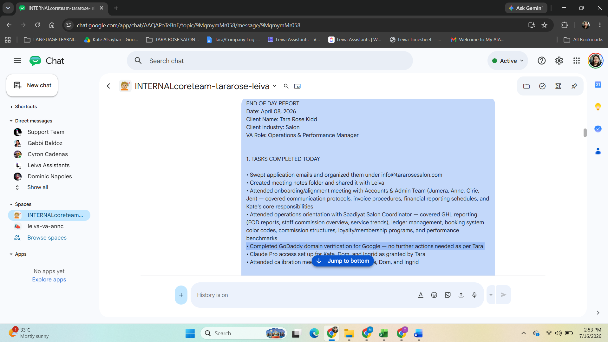
Block 5 — Local + AI Search (5 items)
5.1GBP FreshnessFAIL▾
Notes / Evidence: Done for all 5 locations. All 4 UAE branches confirmed stale (batch-posted Jun 19, 27 days ago); Bahrain has deeper issues (see Top Fix #7). Full detail on the freshness findings, category/link errors, and Bahrain's compounding issues is in New Finding #3.
Why it matters: stale GBP posts and a broken Bahrain listing directly hurt local pack visibility and trust signals.
▸📎 View incognito Google search evidence per location
Branded-name searches in incognito mode, used to verify GBP freshness (ratings, hours, address, last post date) per location. Note: these are branded searches showing the Knowledge Panel, not the competitive local 3-pack — see 5.2 below for the separate ranking test.
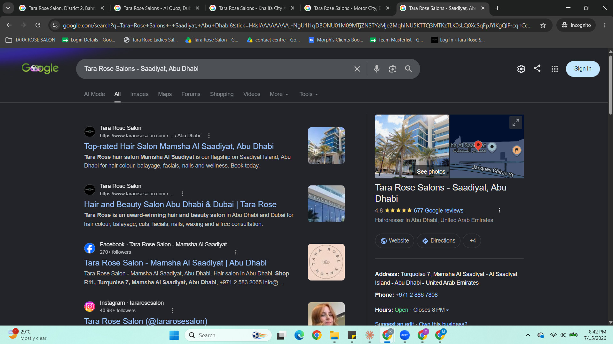
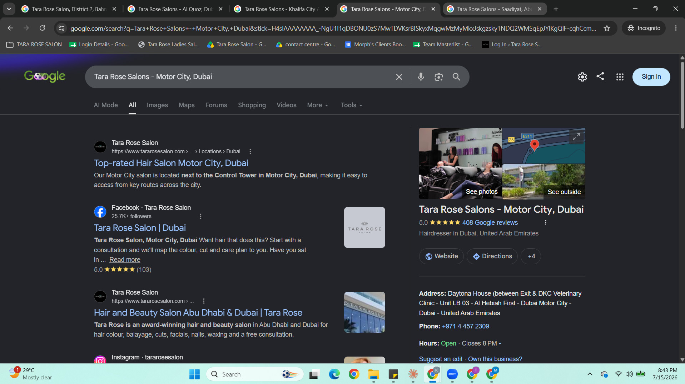
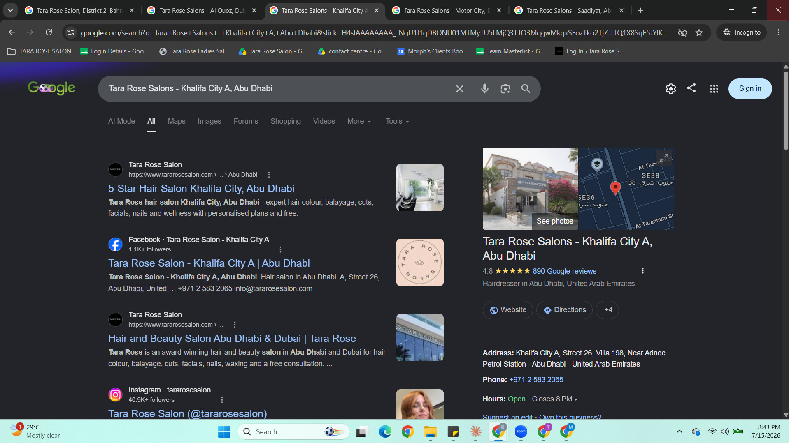
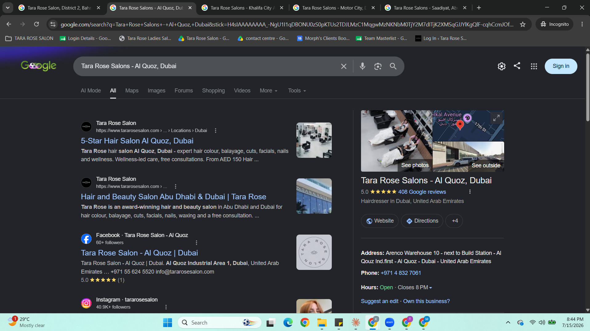
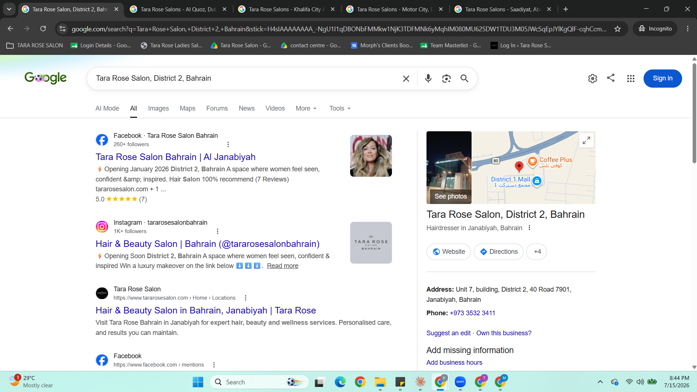
5.2Local pack rankingFAIL▾
Notes / Evidence: Now DONE, with two separate tests on file — the official checklist-compliant result is FAIL. An initial pass (16 July, "[location] + hair salon" phrasing — see Finding #4a) was a directional read, not run against the checklist's own instruction. A second test (17 July, incognito + mobile, exact checklist wording "[location name] + salon" per location) is the authoritative one: Khalifa City A #2 ✅, Mamsha Al Saadiyat #1 ✅, Al Quoz #1 ✅, but Motor City #5 of 10 ❌ — behind La Maison de Amelie, Gladys Beauty Saloon, Pretty Parlor Beauty Lounge, and Code Hair Ladies Salon. Since the checklist's pass bar is top-3 at every location, Motor City's #5 fails the block. Generic, non-branded searches ("dubai salon") surfaced TRS at neither test and are logged as a separate risk flag, not counted against the 4 location results.
Why it matters: local pack position directly drives walk-in and call volume from nearby searchers — Motor City's #5 is losing visibility to 4 competitors.
▸📎 View the authoritative 5.2 test + screenshots
Site: tararosesalon.com · Checklist: Handover Checklist v2 (Click-Through Edition) · Compiled 17 July 2026. This is the checklist-instruction-compliant test — run exactly as written ("[Location name] + salon" per location, incognito, mobile) — and is treated as authoritative for the official 5.2 Pass/Fail verdict, superseding the earlier directional read in Finding #4a.
Checklist instruction: search "[Location name] + salon" and "hair salon near me" per location, incognito, mobile. Pass bar: TRS appears in the top 3 of the local pack (3-pack map result) for every location.
| Location | Search term used | TRS Rank | Status |
|---|---|---|---|
| Khalifa City A | "khalifa city a salon" | #2 of 10 | PASS |
| Mamsha Al Saadiyat | "mamsha al saadiyat salon" | #1 of 11 | PASS |
| Al Quoz, Dubai | "al quoz dubai salon" | #1 of 10 | PASS |
| Motor City, Dubai | "motor city dubai salon" | #5 of 10 | FAIL |
Methodology note: searches used the branch/area name + "salon" rather than generic city-level terms. Generic, non-branded searches ("abu dhabi salon," "dubai salon") did not surface TRS at all — logged as a separate risk flag, not counted against the four location-level results, since the checklist's own instruction is a location-name search. Test run from a mobile device in the Philippines (not on-device in the UAE).
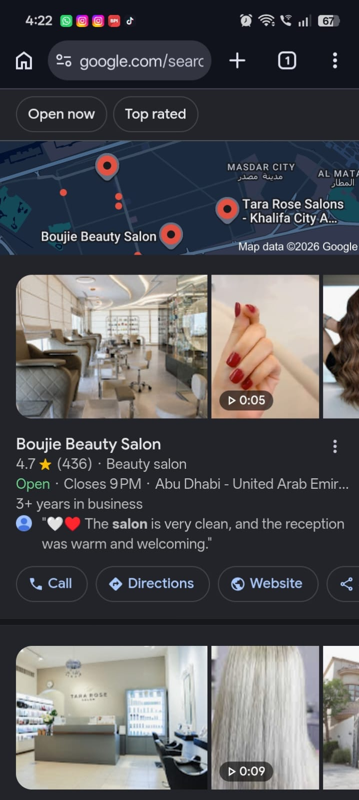
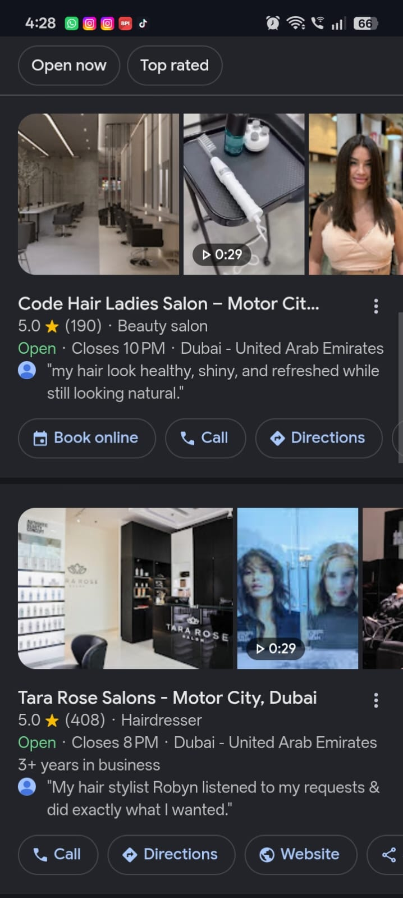
Status Summary (5.2 row): Local pack ranking — 4 branded location searches — 3 of 4 Pass (Khalifa City A, Saadiyat, Al Quoz) · 1 Fail (Motor City, #5).
5.3AI search visibility (ChatGPT/Perplexity/Gemini)PARTIAL — mixed▾
Notes / Evidence: Fully tested now — 8 generic queries × 3 platforms. ChatGPT and Gemini both surface Tara Rose reliably for location-anchored searches (6/8 each, mostly #1); Perplexity lags badly (2/8). All 3 platforms miss Tara Rose entirely for non-location searches ("best hair salon in Dubai," "hair colour Dubai"). Also surfaced a 4th brand-promise phrasing via Gemini — folds into the Confidence Promise finding.
Why it matters: as AI-synthesized answers become a bigger discovery channel, invisibility on citywide/generic queries is a growing blind spot even where branded/local queries perform well.
▸📎 View the full 5.3 test breakdown
Checklist instruction: run the same prompts on ChatGPT, Perplexity, and Gemini; screenshot the answers. Pass bar: TRS named or cited. If not, log the exact phrasing the AI uses.
Source: this section was tested and logged by Kate (Owner A) directly — dated 16–17 July 2026 — not re-tested in this session. No screenshot files for the individual ChatGPT/Perplexity/Gemini answers were provided alongside that source document, so none are embedded below. Findings are reproduced as logged.
Location-anchored queries (Al Quoz, Motor City, Abu Dhabi, Khalifa City, Saadiyat, "near Motor City") — 8 queries tested per platform:
- ChatGPT — TRS surfaced in 6 of 8 queries, almost always ranked #1 (Saadiyat #2, after Definition The Hair Expert).
- Gemini — TRS surfaced in 6 of 8 queries, mostly #1 (Al Quoz #2 after CHALK; Abu Dhabi citywide #3 after Marquee Hair Salon and Sisters Beauty Lounge).
- Perplexity — TRS surfaced in only 2 of 8 queries (Abu Dhabi citywide + Khalifa City, both #1). Invisible for Al Quoz, Motor City, Saadiyat, and "near Motor City" — named unrelated nearby salons instead, never mentioning TRS. Flagged as the clear laggard platform.
Citywide / non-location queries — weak on all 3 platforms:
- "best hair salon in Dubai" — TRS invisible on ChatGPT, Perplexity, AND Gemini.
- "top rated hair salons Dubai for hair colour" — TRS invisible on all 3 platforms.
Competitors named instead across these two queries: Y12, Ivy Beauty & Bubbles, The Hair Palace, Miled Andos, mariadowling, CHALK, Beauty Club London, The Colorist Hair Salon, Sisters Beauty Lounge.
Additional findings logged alongside 5.3:
- Gemini's Al Quoz answer described TRS's guarantee as a "7-day service satisfaction guarantee" — a 4th distinct phrasing of the brand promise (on top of GBP's "7-Day Confidence Promise," the Motor City page's "7-Day Happiness Guarante[e]," and Linktree's "7-Day Guarantee by Tara"). Suggests the phrasing inconsistency is already baked into AI-crawled site content, not just a live-copy issue — feeds into Top Fix #8.
- "Specialist hair colourist Dubai" — a query that used to include TRS in an editorial AI round-up dropped it entirely this week. Flagged to re-check whether this is a one-off or a trend.
Status Summary (5.3 row): AI search visibility — ChatGPT / Perplexity / Gemini, 8 queries each — Strong on location-anchored queries (ChatGPT/Gemini 6/8, Perplexity 2/8) · Invisible on all citywide/generic queries across all 3 platforms.
5.4/5.5Confidence Promise / anchor phrase consistencyFAIL▾
Notes / Evidence: BOTH now DONE. 5.4 (16 July, direct Ctrl+F on live pages) found the phrase only on the homepage — Al Quoz, Khalifa City, and Saadiyat pages don't mention it at all, Motor City uses different wording, and Bahrain's page doesn't exist yet (404). 5.5 (cross-platform bio check) found none of YouTube/IG/TikTok/Facebook use it either. See Finding #3 and Top Fix #8 (upgraded — this is now a content-completeness gap on 3 of 4 location pages, not just a wording mismatch). Update (16 July): Instagram's "Guarantee" Story Highlight has now been opened and reviewed (oldest to newest post) — no additional phrasing found, thread closed.
Why it matters: four different outcomes across the brand's own channels for what should be one consistent, visible guarantee — confuses customers and dilutes the brand promise.
▸📎 View 5.4 Ctrl+F screenshots (homepage + every location page)
Kate ran an incognito Ctrl+F search for "confidence promise" on the homepage and every live location page. Match count shown top-left of each browser find bar.
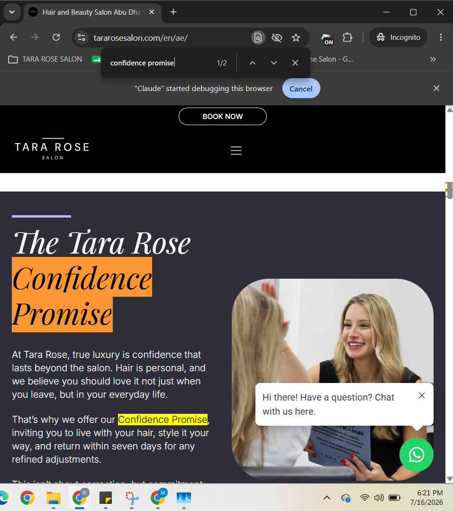
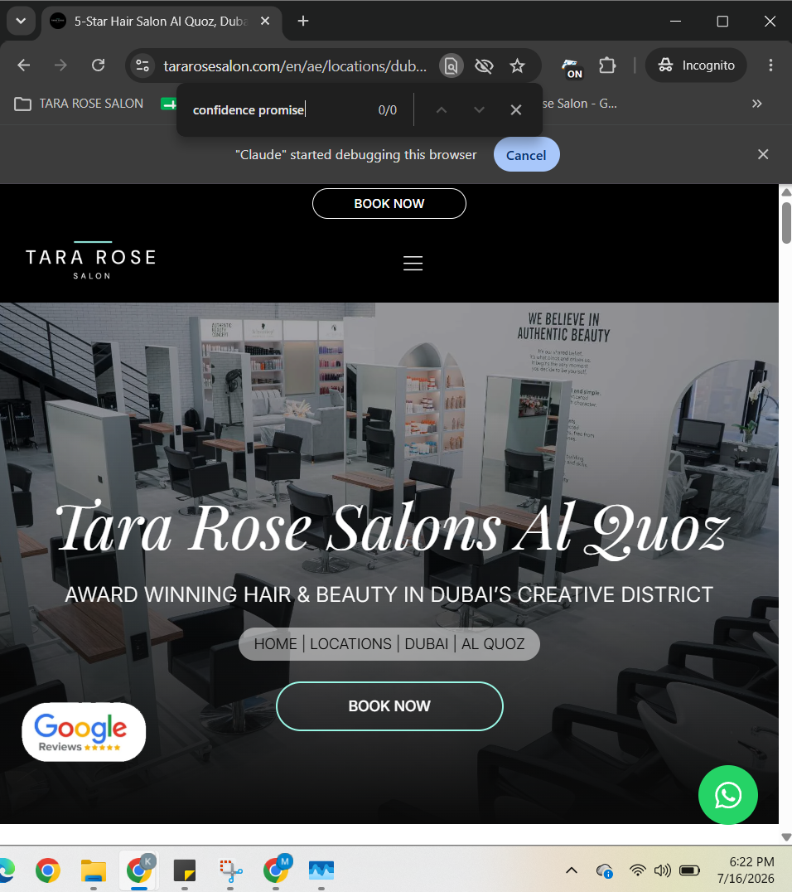
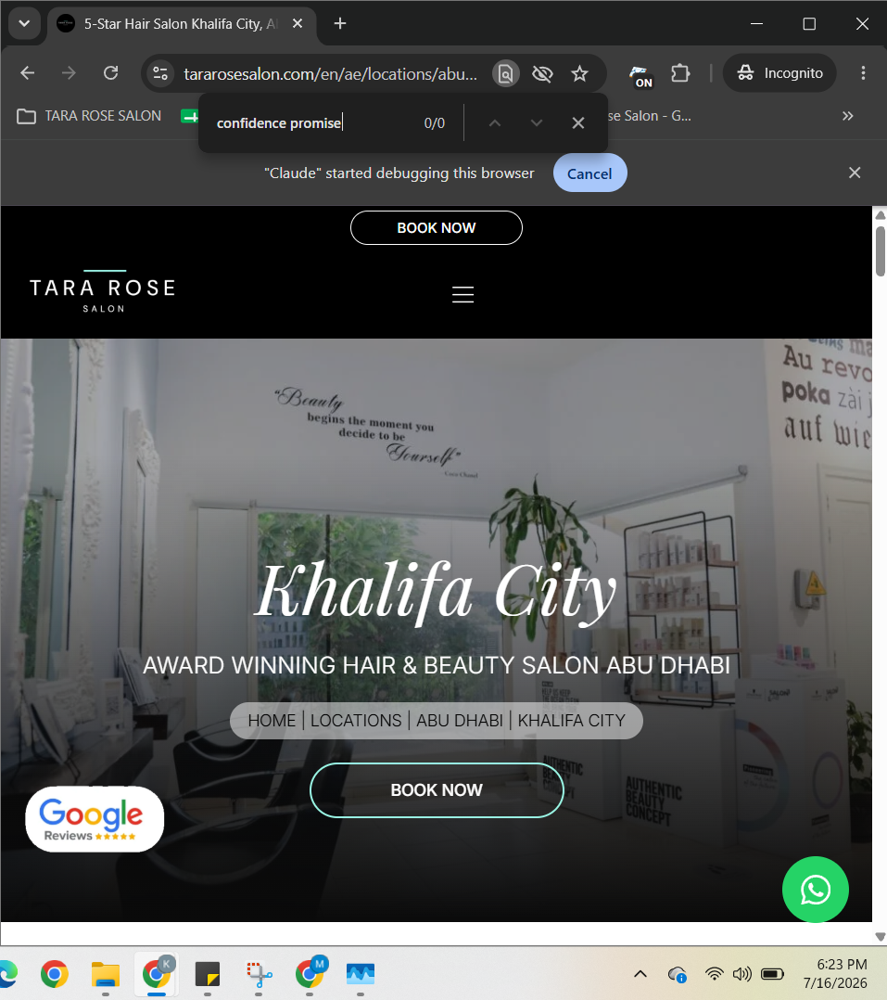
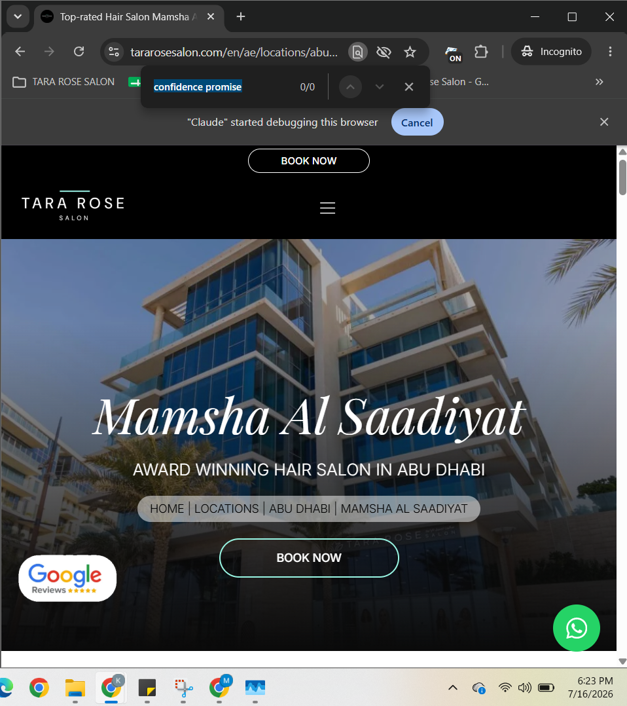
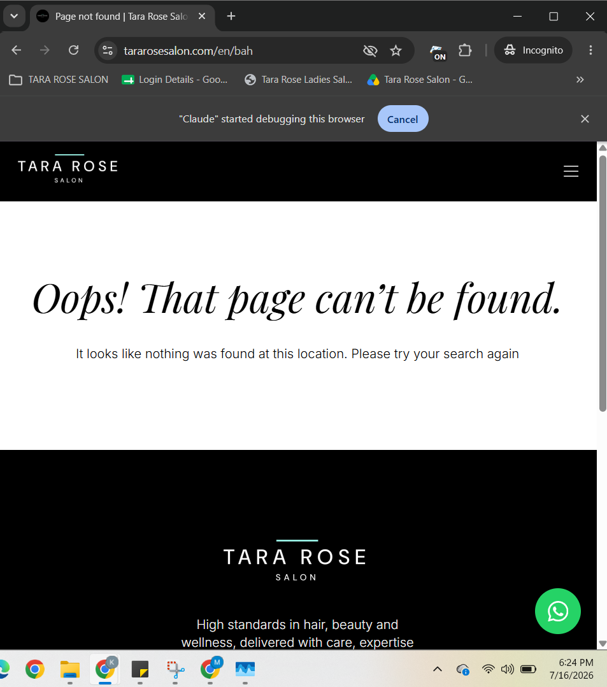
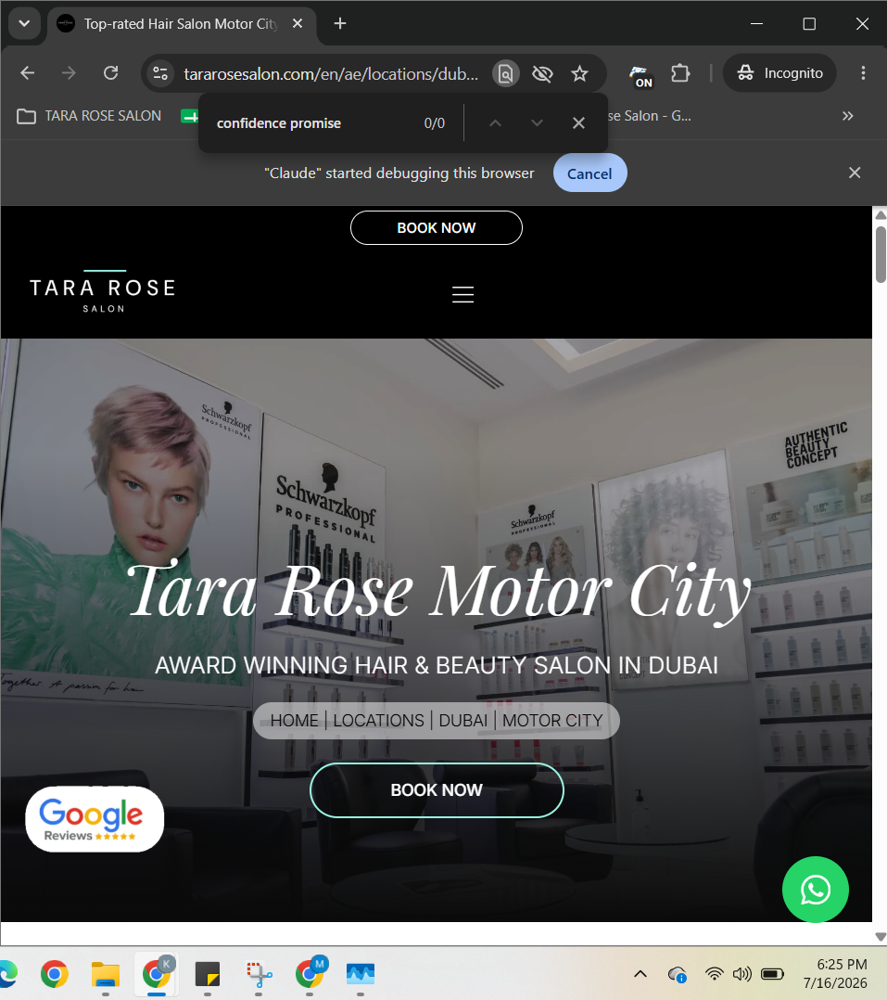
▸📎 View 5.5 cross-platform bio/about screenshots
Kate checked native bio/about text directly on YouTube, both Instagram accounts, TikTok, and Facebook. Finding: none of the five visibly use "Confidence Promise" or any of the other guarantee phrasings already logged — mainly because these bios are optimized for hiring signal, not the brand guarantee.
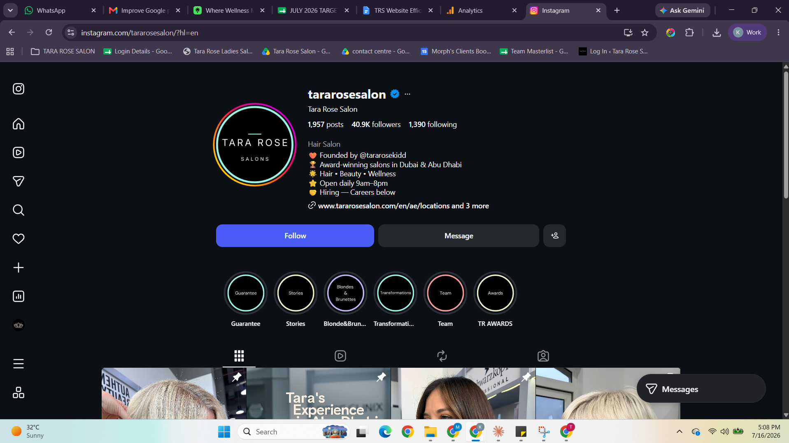
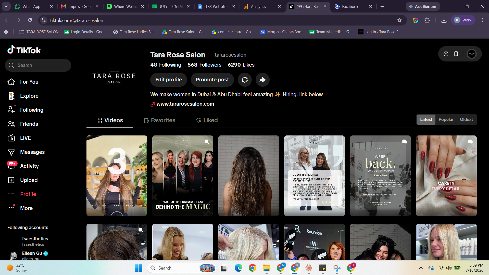
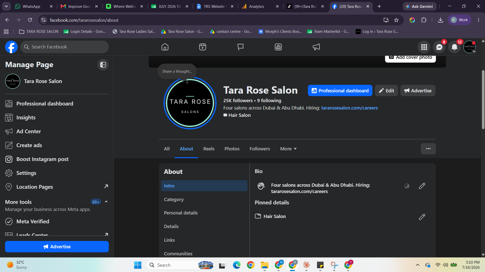
Cross-referenced against Kate's Recruitment Touchpoints tracker (fixes made 9–13 July): the GBP recruitment blurb is confirmed intentional (added 9–10 July across all 4 locations); Al Quoz's "get directions" link previously pointed to Motor City's address, already fixed and verified live 9–10 July; the tracker confirms a "7-day guarantee" welcome video exists on the YouTube channel (only its logo was updated 9–10 July) — very likely the same video Linktree links as "7-DAY GUARANTEE BY TARA," reinforcing that "7-day guarantee" language is what's actually being pushed on video/social channels.
Pass/Fail Roll-Up (Live, updated 17 July 2026)
Real verdicts against each block's own checklist pass bar — not just whether a check was attempted. "Pending / Not Started" covers items still genuinely in progress, blocked, or not yet reached, so the counts stay honest rather than forcing everything into Pass/Fail.
| Block | Pass | Fail | N/A | Pending / Not Started | Notes |
|---|---|---|---|---|---|
| 1 — Technical Health (6) | 1 | 5 | 0 | 0 | 1.4 crawl is now a confirmed FAIL (14 real 404s + 7 confirmed 2-hop redirect chains, full 471/471 crawl complete). 1.2 Lighthouse now has 3 of 4 pages scored (Home, Locations, Contact all PASS; Booking tied to Home, pending). |
| 2 — SEO & Structured Data (6) | 3 | 3 | 0 | 0 | Complete. Fails: 2.2 lexicon, 2.3 schema, 2.5 sitemap. |
| 3 — Behaviour (5) | 1 | 2 | 1 | 1 | 3.3 Vercel is N/A (WordPress, not Vercel). 3.5 is now a confirmed FAIL — critical Janabiyah quiz-popup finding plus a recurring beTracker JS error, reviewed via CSV export rather than waiting on the Clarity dashboard. 3.1 and 3.4 both point to the same root cause — wrong/blocked GA4 property. |
| 4 — Conversion & Attribution (6) | 0 | 3 | 0 | 3 | 4.6 fails (desktop widget doesn't submit); 4.1 now a confirmed FAIL (0 of 221 external links carry genuine marketing UTM tagging); 4.5 partial — mobile test works functionally (routes to WhatsApp, gets confirmation) but timed at 1:02.62, just over the 60s bar. 4.2–4.4 not yet started. |
| 5 — Local + AI Search (5) | 0 | 5 | 0 | 0 | 5.2 is now a confirmed FAIL — the checklist-compliant incognito/mobile test found Motor City at #5, missing the top-3 pass bar. 5.3 is mixed (strong on location-anchored queries, invisible on citywide ones) — logged as partial, not a clean pass/fail. 5.5 (IG Story Highlight) opened and reviewed 16 July — no new phrasing found; folded into the existing Confidence Promise inconsistency fail (Top Fix #8), thread closed. |
| TOTAL (28) | 5 | 18 | 1 | 4 | Reflects real testing outcomes, not just task-completion — several "done" checks (e.g. GBP freshness, schema, sitemap, 1.4 crawl, 3.5 mobile sessions, 4.1 UTM tagging, 5.2 local pack) failed their own pass bar once fully tested. Updated 17 July with the 1.2/1.4/1.5/2.2/4.1 Session Findings Compilation, the 1.3b Indexing Triage, the 3.5 Mobile Session Review, and the 5.2/5.3 Completion Summary folded in. |
Open Questions for Tara / Owners
- Chat-first booking flow (Top Fix #2) — intentional, or should Book Now go straight to Phorest? (Separate from the urgent submit-failure bug.)
- Lexicon exceptions — "guarantee" / "premium" / "upsell": approved exception or rewrite? See 2.2.
- Who currently owns/administers the domain's DNS and hosting — needed to set up Search Console verification.
Recommendations from Tara (via voice note, 17 July)
Tara sent voice notes while reviewing Metricool, with direction on how the branch profiles and campaign pages should be structured going forward:
- Keep each branch's Google Business Profile separate — don't summarize/combine them into one view. Each branch should be set up individually so its efficiency can be analyzed on its own.
- Connect each branch's own webpage to that branch's GBP and Google Ads, so traffic and performance can be properly tracked and analyzed per salon.
- Recruitment landing pages should connect directly to the specific recruitment campaign (precedent: the "Founding 45" webpage built for Daisy), including the linked Instagram — with the ability to customize per campaign so real-time campaigns can be managed and launched as needed.
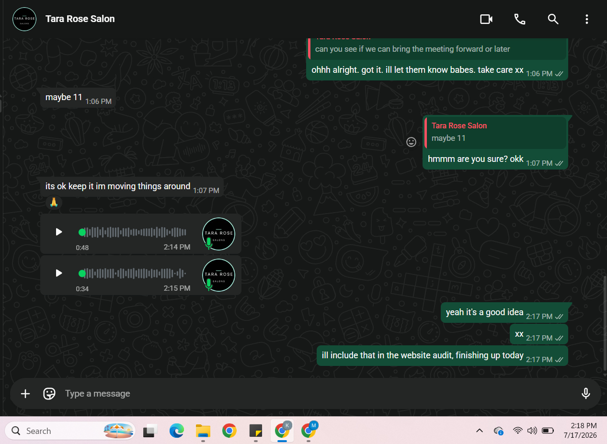